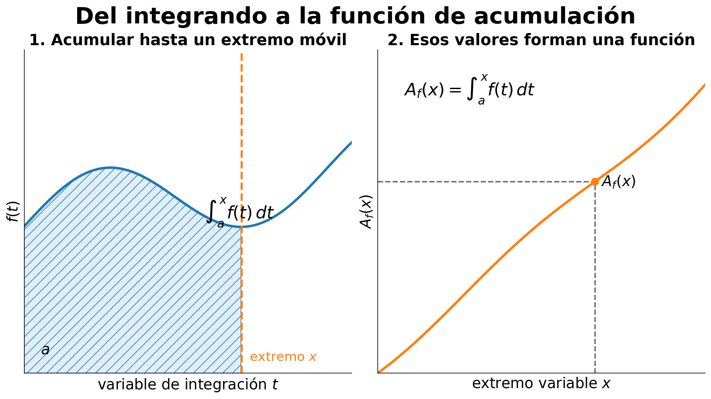
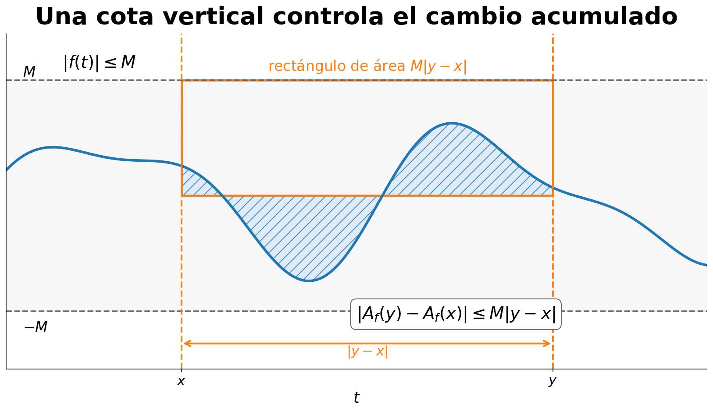
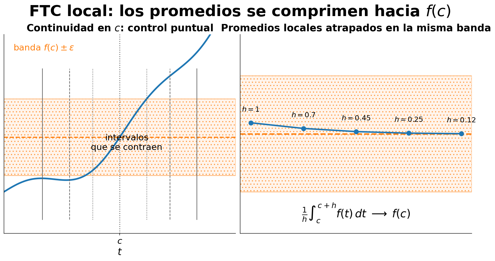
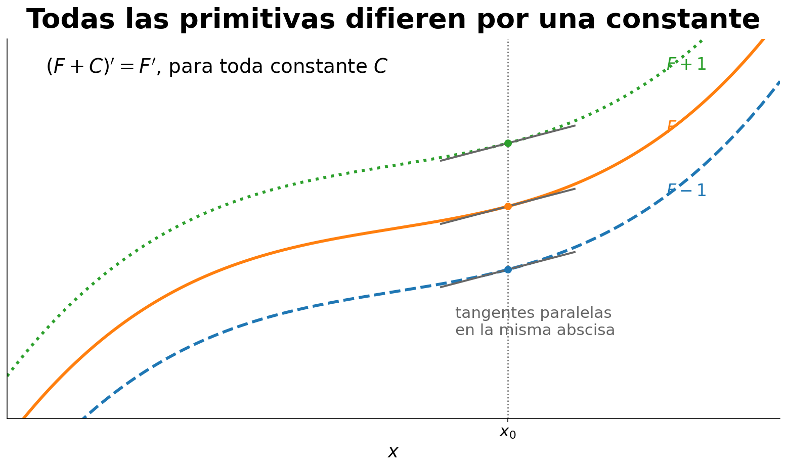
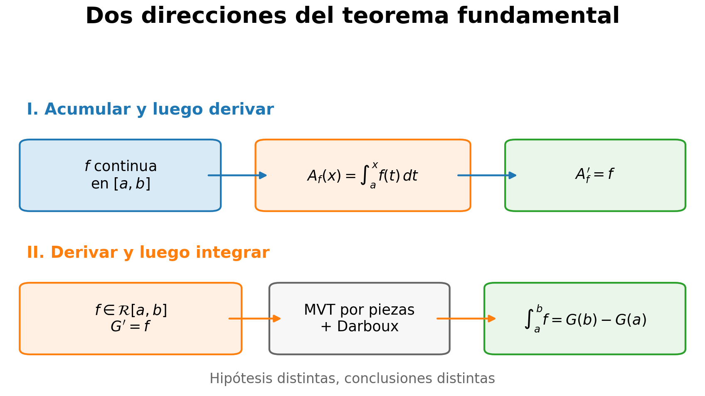
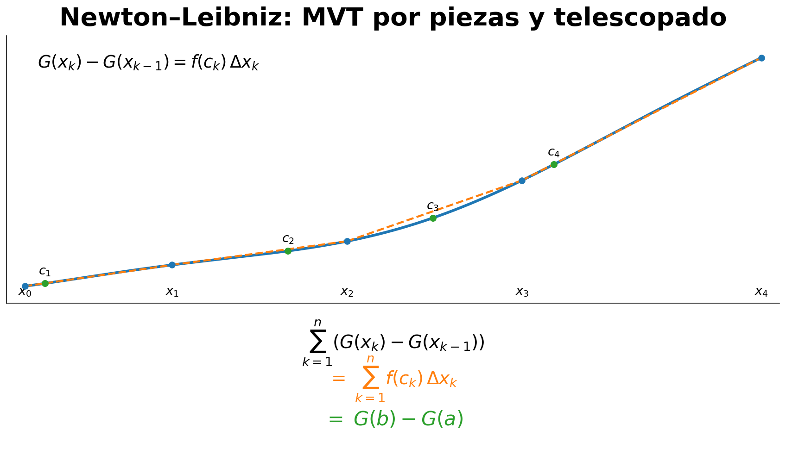
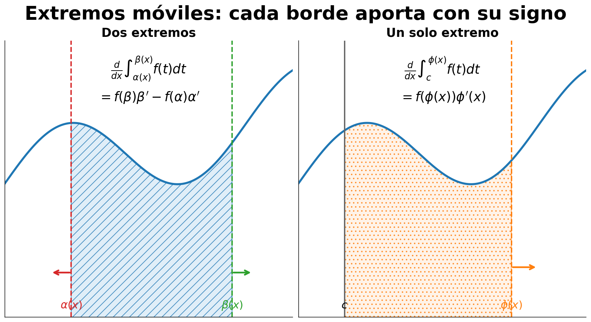
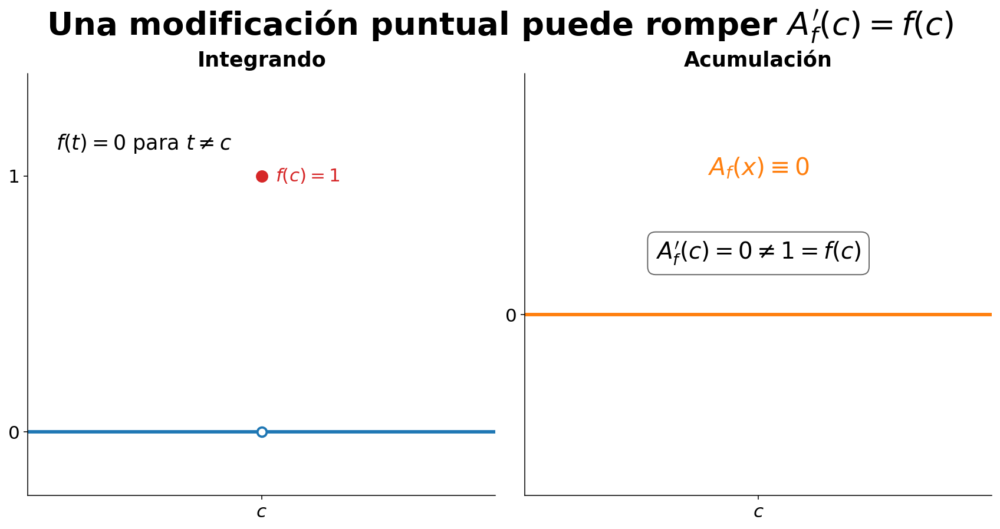
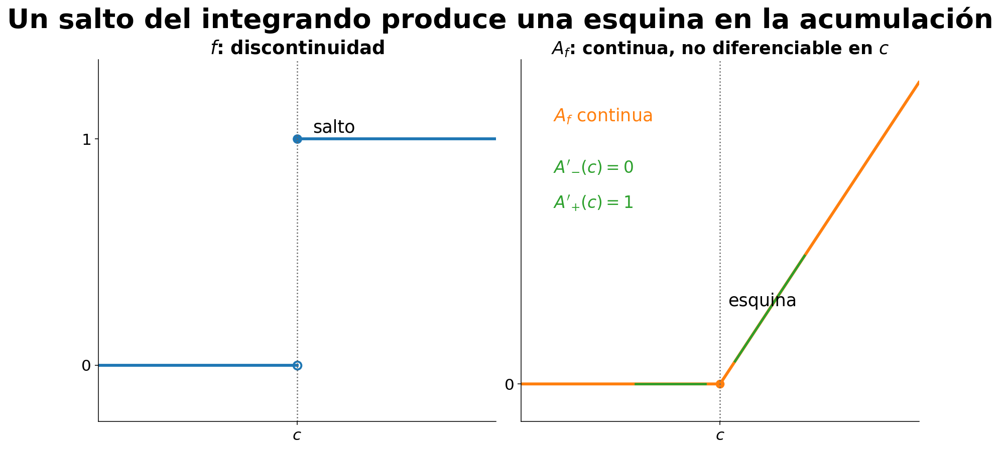

Teorema fundamental del cálculo
16 Teorema fundamental del cálculo
← Capítulo 15 · Índice del Tomo I · Capítulo 17 →
16.1 De un intervalo fijo a un extremo variable
Hasta ahora la integral de Riemann ha aparecido, sobre todo, como un número asociado a una función y a dos extremos fijados. Una vez elegidos \(a<b\) y una función integrable \(f:[a,b]\to\mathbb R\), la expresión
\[ \int_a^b f(t)\,dt \]
produce un único valor real.
El teorema fundamental del cálculo comienza cuando dejamos fijo el extremo izquierdo y permitimos que el extremo derecho se mueva. Ya no obtenemos un solo número, sino una familia de números indexada por \(x\):
\[ x\longmapsto \int_a^x f(t)\,dt. \]
Ese cambio de punto de vista —de una integral sobre un intervalo fijo a una función del extremo— será el hilo conductor del capítulo.
Cuatro papeles que conviene separar
En la expresión
\[ \int_a^x f(t)\,dt, \]
intervienen objetos que cumplen funciones distintas.
- \(a\) es el punto base fijo;
- \(x\) es el extremo variable y será la entrada de la nueva función;
- \(t\) es la variable de integración: vive dentro del símbolo integral y no es una nueva entrada libre;
- \(f\) es la función cuyas contribuciones estamos acumulando entre \(a\) y \(x\).
La letra \(t\) podría reemplazarse por cualquier otra letra que no cree conflicto:
\[ \int_a^x f(t)\,dt = \int_a^x f(u)\,du. \]
Los dos miembros representan el mismo número para el mismo valor de \(x\). La variable de integración es muda; el extremo \(x\) no lo es.
Cuando estudiamos la dependencia respecto de \(x\), escribiremos
\[ \int_a^x f(t)\,dt \]
en lugar de reutilizar \(x\) como variable de integración. Así queda visible qué símbolo está ligado por la integral y cuál permanece libre como argumento de la nueva función.
La función de acumulación
La teoría de C15 garantiza que las restricciones de una función Riemann-integrable a subintervalos siguen siendo integrables (Teorema 14.7). Además, la convención de integral orientada establece que una integral con extremos iguales vale cero (Definición 14.3). Por tanto, para cada \(x\in[a,b]\) la integral desde \(a\) hasta \(x\) está bien definida.
Definición 16.1 Definición (función de acumulación). Sean \(a<b\) y \(f\in\mathcal R[a,b]\). La función de acumulación de \(f\) con punto base \(a\) es la función
\[ A_f:[a,b]\longrightarrow\mathbb R \]
definida por
\[ \boxed{ A_f(x):=\int_a^x f(t)\,dt. } \]
Mientras el punto base \(a\) permanezca fijado, omitiremos ese dato del subíndice y escribiremos simplemente \(A_f\).

Figura 16.1 separa visualmente el punto base fijo, el extremo variable, la variable muda de integración y la nueva función \(A_f\).
La definición transforma una construcción integral en una función ordinaria. Para cada entrada \(x\) obtenemos el número que resulta de integrar \(f\) desde el punto base hasta esa entrada.
Dos valores son inmediatos. En el punto base,
\[ \boxed{A_f(a)=0,} \]
porque Definición 14.3 fija \(\int_a^a f=0\). En el extremo derecho,
\[ \boxed{A_f(b)=\int_a^b f(t)\,dt.} \]
Así, la integral definida sobre todo \([a,b]\) aparece como un valor particular de una función más rica.
Mover el extremo añade exactamente una franja integral
La aditividad orientada de Proposición 14.3 permite comparar dos valores cualesquiera de la acumulación. Si \(x,y\in[a,b]\), entonces
\[ \int_a^y f(t)\,dt = \int_a^x f(t)\,dt + \int_x^y f(t)\,dt. \]
En la notación recién introducida,
\[ \boxed{ A_f(y)-A_f(x) = \int_x^y f(t)\,dt. } \]
Esta identidad no afirma todavía que \(A_f\) sea continua ni diferenciable. Solo dice, exactamente, cuánto cambia la acumulación cuando el extremo se desplaza de \(x\) a \(y\): el incremento de \(A_f\) es la integral de \(f\) sobre el tramo añadido —con el signo correspondiente si se invierte la orientación—.
La fórmula será el puente hacia las próximas secciones. Primero preguntaremos qué tan grande puede ser ese incremento; solo después investigaremos si, al dividirlo por \(y-x\) y hacer que ambos extremos se acerquen, aparece una derivada.
Dos funciones pueden tener la misma integral total y acumular de manera distinta
Ejemplo 16.1 Mismo valor final, distinta función de acumulación. Consideremos en \([0,1]\) la función escalón de Ejemplo 14.9,
\[ s(t)= \begin{cases} 0, & 0\le t<\frac12,\\ 1, & \frac12\le t\le1. \end{cases} \]
Ya sabemos que
\[ \int_0^1 s(t)\,dt=\frac12. \]
Su función de acumulación con base \(0\) es
\[ A_s(x)=\int_0^x s(t)\,dt. \]
Si \(0\le x\le1/2\), la restricción solo difiere de la función cero, a lo sumo, en el extremo \(1/2\), y la invariancia ante una modificación finita de Corolario 14.1 da
\[ A_s(x)=0. \]
Si \(1/2\le x\le1\), la aditividad produce
\[ \begin{aligned} A_s(x) &=\int_0^{1/2}s(t)\,dt +\int_{1/2}^x s(t)\,dt\\ &=0+(x-\tfrac12). \end{aligned} \]
Por tanto,
\[ \boxed{ A_s(x)= \begin{cases} 0, & 0\le x\le\frac12,\\[4pt] x-\frac12, & \frac12\le x\le1. \end{cases} } \]
Comparemos con la función constante
\[ c(t)=\frac12. \]
También satisface
\[ \int_0^1 c(t)\,dt=\frac12, \]
pero su acumulación es
\[ A_c(x)=\int_0^x \frac12\,dt=\frac{x}{2}. \]
Las dos funciones tienen el mismo valor integral sobre el intervalo completo,
\[ A_s(1)=A_c(1)=\frac12, \]
pero
\[ A_s\ne A_c. \]
Conocer únicamente \(\int_0^1 f\) no determina cómo se va acumulando ese valor a medida que se mueve el extremo.
El ejemplo muestra por qué el nuevo objeto contiene más información que la integral total. La expresión
\[ \int_a^b f \]
responde una sola pregunta; la función
\[ x\longmapsto\int_a^x f \]
responde simultáneamente una pregunta para cada \(x\in[a,b]\).
La primera pregunta analítica del capítulo
Hemos definido \(A_f\) usando únicamente resultados ya establecidos sobre la integral de Riemann. Hasta aquí no hemos supuesto que \(f\) sea continua y tampoco hemos probado ninguna regularidad nueva para \(A_f\).
La identidad
\[ A_f(y)-A_f(x)=\int_x^y f(t)\,dt \]
convierte ahora la cuestión en una estimación: si \(x\) y \(y\) están próximos, ¿podemos obligar a que \(A_f(x)\) y \(A_f(y)\) también lo estén?
Ésa será la tarea exclusiva de §16.2. Antes de hablar de derivadas, demostraremos que la función de acumulación posee una propiedad de continuidad que proviene directamente de la acotación del integrando.
Antes de seguir. En \(A_f(x)=\int_a^x f(t)\,dt\), ¿qué símbolo permanece libre y cuál está ligado por la integral? ¿Por qué \(A_f(a)=0\) no exige ninguna información sobre el valor puntual \(f(a)\)? Si \(x<y\), ¿qué teorema permite identificar \(A_f(y)-A_f(x)\) con la integral sobre \([x,y]\)? ¿Cómo demuestra Ejemplo 16.1 que conocer la integral total no basta para conocer la función de acumulación?
16.2 La función de acumulación es continua antes de ser derivable
La sección anterior transformó la integral sobre un intervalo fijo en una función:
\[ A_f(x)=\int_a^x f(t)\,dt. \]
La identidad fundamental que obtuvimos fue
\[ A_f(y)-A_f(x) = \int_x^y f(t)\,dt. \]
Antes de intentar derivar esta función conviene resolver una pregunta más básica: ¿puede el valor acumulado cambiar mucho cuando movemos poco el extremo?
La respuesta será más fuerte que la simple continuidad. Y, significativamente, no exigirá que el integrando sea continuo.
La integrabilidad ya contiene una cota global
Sea
\[ f\in\mathcal R[a,b]. \]
Por la propia definición de integrabilidad de Riemann, \(f\) es acotada. Por tanto existe algún número \(M\ge0\) tal que
\[ |f(t)|\le M \qquad (t\in[a,b]). \]
No necesitamos que \(M\) sea la mejor cota posible. Basta disponer de una cota uniforme válida en todo el intervalo.
Esta información parece hablar solo de las alturas de \(f\). Sin embargo, combinada con la identidad de incremento de §16.1, controla inmediatamente cuánto puede variar la función de acumulación.
Proposición 16.1 Proposición (cota Lipschitz para la función de acumulación). Sean \(a<b\), \(f\in\mathcal R[a,b]\) y
\[ A_f(x):=\int_a^x f(t)\,dt. \]
Si \(M\ge0\) satisface
\[ |f(t)|\le M \qquad (t\in[a,b]), \]
entonces, para cualesquiera \(x,y\in[a,b]\),
\[ \boxed{ |A_f(y)-A_f(x)| \le M|y-x|. } \]
En particular, \(A_f\) es uniformemente continua en \([a,b]\) y, por tanto, continua en cada punto del intervalo.
Demostración. Si \(x=y\), ambos miembros son cero y la desigualdad es inmediata.
Supongamos primero que \(x<y\). Por la identidad de §16.1,
\[ A_f(y)-A_f(x) = \int_x^y f(t)\,dt. \]
La restricción de \(f\) a \([x,y]\) es Riemann integrable por Teorema 14.7. La desigualdad triangular integral Corolario 14.2 proporciona
\[ \left| A_f(y)-A_f(x) \right| = \left| \int_x^y f(t)\,dt \right| \le \int_x^y |f(t)|\,dt. \]
Como
\[ |f(t)|\le M \qquad(t\in[x,y]), \]
la monotonía de la integral en Teorema 14.6 da
\[ \int_x^y |f(t)|\,dt \le \int_x^y M\,dt. \]
La integral de la función constante vale
\[ \int_x^y M\,dt=M(y-x). \]
Por consiguiente,
\[ |A_f(y)-A_f(x)| \le M(y-x) = M|y-x|. \]
Si \(y<x\), intercambiamos los papeles de \(x\) e \(y\). Como
\[ |A_f(y)-A_f(x)| = |A_f(x)-A_f(y)|, \]
el caso ya demostrado produce
\[ |A_f(y)-A_f(x)| \le M(x-y) = M|y-x|. \]
Queda establecida la cota para todos los pares \(x,y\in[a,b]\).
Para deducir continuidad uniforme, fijemos \(\varepsilon>0\). Si \(M=0\), la desigualdad anterior obliga a
\[ |A_f(y)-A_f(x)|=0 \]
para todos \(x,y\), de modo que \(A_f\) es constante y la conclusión es inmediata.
Si \(M>0\), tomamos
\[ \delta:=\frac{\varepsilon}{M}. \]
Entonces, para cualesquiera \(x,y\in[a,b]\),
\[ |x-y|<\delta \quad\Longrightarrow\quad |A_f(y)-A_f(x)| \le M|y-x| < M\delta = \varepsilon. \]
El mismo \(\delta\) funciona simultáneamente para todos los puntos del intervalo. Por tanto \(A_f\) es uniformemente continua y, en particular, continua. \(\square\)

La estimación de Proposición 16.1 queda representada en Figura 16.2: la continuidad de la acumulación proviene aquí de la acotación del integrando, no de su continuidad.
La estimación es más informativa que la continuidad
La conclusión
\[ A_f(y)\longrightarrow A_f(x) \qquad (y\to x) \]
es solo una parte de la información obtenida. La proposición proporciona una cota cuantitativa:
\[ \boxed{ \text{desplazar el extremo una distancia }|y-x| \text{ cambia la acumulación a lo sumo en }M|y-x|. } \]
No aparece aquí ninguna derivada. Tampoco hemos necesitado que \(f\) varíe suavemente entre \(x\) e \(y\). La única información puntual empleada ha sido la cota global
\[ |f|\le M. \]
Esto explica por qué la regularidad de la acumulación puede ser mejor que la del integrando.
Un integrando discontinuo puede tener una acumulación continua
Volvamos a la función escalón de Ejemplo 16.1:
\[ s(t)= \begin{cases} 0,&0\le t<\frac12,\\ 1,&\frac12\le t\le1. \end{cases} \]
La función \(s\) es discontinua en \(1/2\), pero es Riemann integrable y satisface
\[ |s(t)|\le1. \]
Por Proposición 16.1, su función de acumulación verifica
\[ |A_s(y)-A_s(x)| \le |y-x| \]
para todos \(x,y\in[0,1]\).
En §16.1 calculamos además
\[ A_s(x)= \begin{cases} 0,&0\le x\le\frac12,\\[4pt] x-\frac12,&\frac12\le x\le1. \end{cases} \]
La fórmula concreta confirma lo que el teorema ya garantiza: \(A_s\) es continua incluso en el punto donde \(s\) presenta su salto.
La lección lógica es importante:
\[ \boxed{ f\in\mathcal R[a,b] \quad\Longrightarrow\quad A_f\text{ es continua}, } \]
mientras que
\[ f\in\mathcal R[a,b] \not\Longrightarrow f\text{ es continua}. \]
Por tanto, la continuidad de \(A_f\) no puede explicarse diciendo simplemente que «la integral de una función continua cambia continuamente». Esa afirmación sería demasiado débil: la acumulación ya es continua para todo integrando Riemann integrable.
Continuidad de la acumulación y continuidad del integrando son preguntas diferentes
Conviene separar tres niveles.
- Integrabilidad de \(f\). Garantiza que \(f\) es acotada y que las integrales sobre subintervalos están definidas.
- Continuidad de \(A_f\). Se obtiene de la cota integral de esta sección y no requiere continuidad de \(f\).
- Diferenciabilidad de \(A_f\). No ha sido establecida todavía. Para relacionar la derivada de \(A_f\) con el valor puntual \(f(c)\) necesitaremos información adicional acerca de \(f\) cerca de \(c\).
Esta separación evita una conclusión prematura. De
\[ A_f\text{ continua} \]
no podemos deducir todavía
\[ A_f'(c)=f(c). \]
La primera afirmación controla diferencias de valores de \(A_f\); la segunda exige estudiar un cociente.
El cociente que abre la puerta al FTC
Si \(c\) y \(c+h\) pertenecen a \([a,b]\) y \(h\ne0\), la identidad de §16.1 da
\[ A_f(c+h)-A_f(c) = \int_c^{c+h}f(t)\,dt. \]
Por tanto,
\[ \boxed{ \frac{A_f(c+h)-A_f(c)}{h} = \frac1h\int_c^{c+h}f(t)\,dt. } \]
El miembro derecho es un promedio integral local sobre un intervalo que se contrae hacia \(c\). La cota Lipschitz demuestra que este cociente permanece acotado por \(M\) en valor absoluto, pero eso no identifica todavía su límite.
La pregunta siguiente será mucho más precisa:
\[ \text{si }f\text{ es continua en }c, \quad \text{¿ese promedio local tiende a }f(c)? \]
Responderla será la tarea exclusiva de §16.3.
Antes de seguir. ¿Dónde se usa exactamente que una función Riemann integrable sea acotada? ¿Por qué la prueba de Proposición 16.1 necesita la desigualdad triangular integral antes de aplicar monotonía? ¿Qué demuestra Ejemplo 16.1 acerca de la relación entre continuidad del integrando y continuidad de su acumulación? ¿Por qué la cota \(|A_f(y)-A_f(x)|\le M|y-x|\) no basta, por sí sola, para concluir que \(A_f'(c)=f(c)\)?
16.3 Derivar una acumulación en un punto de continuidad
La sección anterior dejó preparado el cociente
\[ \frac{A_f(c+h)-A_f(c)}{h} = \frac1h\int_c^{c+h}f(t)\,dt, \]
para incrementos admisibles \(h\ne0\). La forma recuerda a un promedio integral, pero ahora el intervalo de promedio se contrae hacia un único punto \(c\).
La pregunta es local. No necesitamos saber que \(f\) sea continua en todo \([a,b]\); necesitamos saber qué ocurre con \(f(t)\) cuando \(t\) se aproxima al punto concreto \(c\).
El promedio local debe compararse con el valor central
Para descubrir el límite correcto, no basta acotar el cociente. Debemos compararlo con \(f(c)\). Restando ese valor obtenemos una identidad exacta:
\[ \begin{aligned} \frac{A_f(c+h)-A_f(c)}{h}-f(c) &= \frac1h\int_c^{c+h}f(t)\,dt - \frac1h\int_c^{c+h}f(c)\,dt\\ &= \frac1h\int_c^{c+h}\bigl(f(t)-f(c)\bigr)\,dt. \end{aligned} \]
La linealidad de la integral justifica el último paso. La expresión ya muestra la estrategia de la prueba: si \(f(t)\) permanece cerca de \(f(c)\) en todo el pequeño intervalo entre \(c\) y \(c+h\), entonces el promedio del error debe ser pequeño.
Éste es el punto exacto en el que entra la continuidad de \(f\) en \(c\).
Teorema 16.1 Teorema (forma local del teorema fundamental del cálculo). Sean \(a<b\) y \(f\in\mathcal R[a,b]\). Definamos
\[ A_f(x):=\int_a^x f(t)\,dt, \qquad x\in[a,b]. \]
Sea \(c\in[a,b]\). Si \(f\) es continua en \(c\) relativamente al dominio \([a,b]\), entonces \(A_f\) es diferenciable en \(c\) relativamente a \([a,b]\) y
\[ \boxed{ (A_f)'_{[a,b]}(c)=f(c). } \]
Si \(c\in(a,b)\), esta es la derivada bilateral ordinaria. Si \(c=a\) o \(c=b\), se interpreta como la derivada relativa al dominio, es decir, mediante los incrementos admisibles del intervalo.
Demostración. Consideremos un incremento \(h\ne0\) tal que
\[ c+h\in[a,b]. \]
Por la identidad de incremento de §16.1,
\[ A_f(c+h)-A_f(c) = \int_c^{c+h}f(t)\,dt. \]
Como la función constante \(t\mapsto f(c)\) es integrable y la integral es lineal,
\[ \frac{A_f(c+h)-A_f(c)}{h}-f(c) = \frac1h\int_c^{c+h}\bigl(f(t)-f(c)\bigr)\,dt. \]
Queremos demostrar que el miembro derecho tiende a \(0\) cuando \(h\to0\) a través de los incrementos admisibles.
Sea \(\varepsilon>0\). Como \(f\) es continua en \(c\) relativamente a \([a,b]\), existe \(\delta>0\) tal que
\[ t\in[a,b], \qquad |t-c|<\delta \quad\Longrightarrow\quad |f(t)-f(c)|<\varepsilon. \]
Tomemos ahora un incremento admisible \(h\) con
\[ 0<|h|<\delta. \]
Todo punto \(t\) situado entre \(c\) y \(c+h\) pertenece a \([a,b]\) y satisface
\[ |t-c|\le |h|<\delta. \]
Por tanto,
\[ |f(t)-f(c)|<\varepsilon \]
en todo el intervalo comprendido entre ambos extremos.
Escribamos
\[ u_h:=\min\{c,c+h\}, \qquad v_h:=\max\{c,c+h\}. \]
La restricción de \(f-f(c)\) a \([u_h,v_h]\) es Riemann integrable por Teorema 14.7 y la linealidad de Teorema 14.6. Usando la orientación de la integral, la desigualdad triangular integral Corolario 14.2 y la monotonía,
\[ \begin{aligned} \left| \int_c^{c+h}\bigl(f(t)-f(c)\bigr)\,dt \right| &= \left| \int_{u_h}^{v_h}\bigl(f(t)-f(c)\bigr)\,dt \right|\\ &\le \int_{u_h}^{v_h}|f(t)-f(c)|\,dt\\ &\le \int_{u_h}^{v_h}\varepsilon\,dt\\ &= \varepsilon(v_h-u_h)\\ &= \varepsilon |h|. \end{aligned} \]
Dividiendo por \(|h|>0\) obtenemos
\[ \left| \frac{A_f(c+h)-A_f(c)}{h}-f(c) \right| \le \varepsilon. \]
Como esto vale para todo incremento admisible suficientemente pequeño,
\[ \lim_{\substack{h\to0\\c+h\in[a,b]}} \frac{A_f(c+h)-A_f(c)}{h} = f(c). \]
Ésta es exactamente la derivada relativa de \(A_f\) en \(c\). \(\square\)

Figura 16.3 resume el mecanismo de la prueba de Teorema 16.1: se controla directamente el error integral; no se introduce un punto intermedio mediante el teorema del valor medio para integrales.
La conclusión es verdaderamente local
El teorema no exige continuidad global de \(f\). Si una función Riemann-integrable tiene una discontinuidad lejos de \(c\), esa discontinuidad no interviene en el argumento: al hacer \(h\to0\), el intervalo entre \(c\) y \(c+h\) termina contenido en cualquier entorno suficientemente pequeño de \(c\).
Por eso la hipótesis debe leerse literalmente:
\[ \boxed{ \text{$f$ integrable en }[a,b] + \text{$f$ continua en }c \Longrightarrow (A_f)'(c)=f(c). } \]
La integrabilidad cumple una función global: garantiza que las integrales que definen \(A_f\) existen. La continuidad cumple una función local: identifica el límite del promedio integral que se contrae hacia \(c\).
La función escalón de Ejemplo 16.1 ilustra esta separación. Es discontinua en \(1/2\), pero es continua en todos los demás puntos de \([0,1]\). Por tanto, Teorema 16.1 permite concluir inmediatamente que su acumulación satisface
\[ (A_s)'(c)=s(c) \]
en cada punto \(c\ne1/2\), interpretando los extremos relativamente al dominio. En el punto de salto el teorema simplemente no autoriza ninguna conclusión; el análisis específico de ese punto quedará para la auditoría de hipótesis posterior.
Una formulación equivalente: los promedios locales recuperan el valor puntual
Para todo punto de continuidad \(c\), el teorema puede releerse como
\[ \boxed{ \lim_{\substack{h\to0\\c+h\in[a,b]\\h\ne0}} \frac1h\int_c^{c+h}f(t)\,dt = f(c). } \]
Así aparece una relación fundamental entre dos escalas:
\[ \text{promedio integral sobre un intervalo pequeño} \longrightarrow \text{valor puntual en el centro}. \]
No hemos usado el teorema del valor medio integral de C16 para seleccionar un punto intermedio. Esa ruta exigiría continuidad en todo el pequeño subintervalo. La prueba anterior necesita únicamente continuidad en el punto \(c\) y controla directamente el error integral.
Qué falta para obtener una afirmación global
Teorema 16.1 habla de un punto \(c\). Si sabemos que \(f\) es continua en cada punto de \([a,b]\), podremos aplicar el resultado simultáneamente a todos ellos y concluir que la función de acumulación es una primitiva de \(f\) en todo el intervalo.
Ese paso de una afirmación local, punto por punto, a la primera forma global del teorema fundamental será la tarea exclusiva de §16.4.
Antes de seguir. ¿Qué parte de la prueba usa la integrabilidad global de \(f\) y qué parte usa solamente continuidad en \(c\)? ¿Por qué se resta \(f(c)\) antes de estimar el cociente? ¿Cómo permite la orientación tratar con una única prueba los incrementos positivos y negativos? ¿Por qué Teorema 16.1 sí se aplica a la función escalón de Ejemplo 16.1 fuera de su salto, pero no permite afirmar nada en el propio punto de discontinuidad?
16.4 Primera forma global del teorema fundamental
Teorema 16.1 resolvió el problema punto por punto: si una función Riemann-integrable es continua en un punto \(c\), entonces la derivada de su función de acumulación existe en ese punto y recupera exactamente el valor \(f(c)\).
La primera forma global del teorema fundamental aparece cuando esa hipótesis local se cumple en todos los puntos del intervalo. No necesitamos una idea nueva de prueba; necesitamos reconocer que el resultado local puede aplicarse sucesivamente a cada punto de \([a,b]\).
De la continuidad global a una identidad de funciones
Supongamos ahora que
\[ f:[a,b]\longrightarrow\mathbb R \]
es continua. Por Teorema 14.4, toda función continua sobre un intervalo compacto es Riemann integrable. Por tanto la función de acumulación de Definición 16.1,
\[ A_f(x):=\int_a^x f(t)\,dt, \]
está bien definida para todo \(x\in[a,b]\).
Como \(f\) es continua en cada punto del intervalo, Teorema 16.1 puede aplicarse en cualquier \(c\in[a,b]\). Esto produce la primera formulación global del teorema fundamental.
Teorema 16.2 Teorema (primera forma global del teorema fundamental del cálculo). Sean \(a<b\) y \(f:[a,b]\to\mathbb R\) continua. Definamos
\[ A_f(x):=\int_a^x f(t)\,dt. \]
Entonces \(A_f\) es diferenciable relativamente a \([a,b]\) en cada punto \(c\in[a,b]\) y
\[ \boxed{ (A_f)'_{[a,b]}(c)=f(c) \qquad(c\in[a,b]). } \]
En particular, para todo \(c\in(a,b)\) la derivada ordinaria existe y satisface
\[ \boxed{ A_f'(c)=f(c). } \]
Demostración. La continuidad de \(f\) en \([a,b]\) implica, por Teorema 14.4, que \(f\in\mathcal R[a,b]\). Fijemos un punto arbitrario \(c\in[a,b]\). Como \(f\) es continua en \(c\), se cumplen todas las hipótesis de Teorema 16.1; por consiguiente,
\[ (A_f)'_{[a,b]}(c)=f(c). \]
El punto \(c\) fue arbitrario, de modo que la igualdad vale en todo \([a,b]\). Si \(c\in(a,b)\), la derivada relativa coincide con la derivada bilateral ordinaria. \(\square\)
Qué significa aquí «global»
La palabra global no indica que hayamos reemplazado la prueba local por una estimación uniforme en todo el intervalo. La lógica es más sencilla:
\[ \boxed{ \text{continuidad de $f$ en todo $[a,b]$} \Longrightarrow \text{continuidad de $f$ en cada $c$} \Longrightarrow (A_f)'(c)=f(c)\text{ para cada $c$}. } \]
La afirmación local de §16.3 sigue siendo el mecanismo esencial. La hipótesis global permite aplicarla sin excepciones.
Esta distinción será importante más adelante. Si \(f\) es Riemann integrable pero tiene algunos puntos de discontinuidad, la función de acumulación sigue siendo continua por Proposición 16.1, y Teorema 16.1 sigue identificando su derivada en cada punto donde \(f\) sí sea continua. Lo que falla es la posibilidad de escribir una identidad derivativa válida automáticamente en todo el intervalo.
Interior y extremos: la misma afirmación, límites distintos
En el interior, el teorema afirma que para \(c\in(a,b)\),
\[ \lim_{h\to0} \frac{A_f(c+h)-A_f(c)}{h} = f(c). \]
En el extremo izquierdo solo existen incrementos admisibles con \(h>0\) suficientemente pequeño. Por tanto,
\[ \boxed{ \lim_{h\to0^+} \frac{A_f(a+h)-A_f(a)}{h} = f(a). } \]
En el extremo derecho solo existen incrementos admisibles con \(h<0\) suficientemente pequeño, y
\[ \boxed{ \lim_{h\to0^-} \frac{A_f(b+h)-A_f(b)}{h} = f(b). } \]
Estas dos fórmulas no agregan hipótesis al teorema. Simplemente hacen explícito cómo se lee la derivada relativa cuando el dominio es el intervalo cerrado \([a,b]\).
Si restringiéramos la palabra «derivable» a la derivada bilateral, tendríamos que formular el resultado solo sobre \((a,b)\) y añadir dos enunciados laterales separados para los extremos. La derivada relativa permite expresar en una sola fórmula la regularidad que realmente posee \(A_f\) sobre todo su dominio.
Integrar y después derivar recupera la función original
El contenido conceptual de Teorema 16.2 puede condensarse en el esquema
\[ f \quad\xrightarrow{\;\text{acumular desde }a\;} \quad A_f(x)=\int_a^x f(t)\,dt \quad\xrightarrow{\;\text{derivar}\;} \quad f. \]
Para funciones continuas, la operación de formar la acumulación y luego derivar devuelve el integrando original:
\[ \boxed{ \frac{d}{dx} \left( \int_a^x f(t)\,dt \right) = f(x), \qquad x\in(a,b), } \]
con la interpretación relativa correspondiente en \(a\) y \(b\).
Ésta es una de las dos direcciones del teorema fundamental. Todavía no hemos demostrado la dirección inversa que permite evaluar una integral a partir de otra función cuya derivada sea \(f\). Esa dirección requerirá formular con precisión qué entendemos por una primitiva y estudiar su falta de unicidad.
El punto base cambia la acumulación solo en una constante
La elección del punto base \(a\) interviene en el valor de la función de acumulación, pero no en la función que recuperamos al derivar.
Sean \(p,q\in[a,b]\) y definamos
\[ A_p(x):=\int_p^x f(t)\,dt, \qquad A_q(x):=\int_q^x f(t)\,dt. \]
Por la aditividad orientada,
\[ \int_p^x f(t)\,dt = \int_p^q f(t)\,dt + \int_q^x f(t)\,dt, \]
de donde
\[ \boxed{ A_q(x) = A_p(x) - \int_p^q f(t)\,dt. } \]
La cantidad
\[ \int_p^q f(t)\,dt \]
no depende de \(x\). Por tanto dos funciones de acumulación construidas a partir del mismo integrando, pero con puntos base distintos, difieren por una constante.
Además, si \(f\) es continua, Teorema 16.2 da
\[ (A_p)'_{[a,b]}(x) = (A_q)'_{[a,b]}(x) = f(x). \]
Estamos viendo ya el fenómeno que la sección siguiente formalizará: una función puede tener muchas funciones asociadas con la misma derivada, y todas ellas están separadas entre sí por constantes.
Lo que el teorema todavía no afirma
Conviene no mezclar las dos direcciones del puente entre derivación e integración.
Teorema 16.2 afirma:
\[ \boxed{ f\text{ continua} \Longrightarrow \left( x\mapsto\int_a^x f(t)\,dt \right)' = f. } \]
Todavía no hemos demostrado una fórmula de la forma
\[ \int_a^b f(t)\,dt = F(b)-F(a) \]
a partir de una función \(F\) conocida con \(F'=f\). Esa será una consecuencia posterior, no una reformulación automática de lo que acabamos de probar.
Tampoco hemos definido aún de manera formal el término primitiva. La tarea exclusiva de §16.5 será introducir esa noción, demostrar que toda función continua posee al menos una —precisamente gracias a Teorema 16.2— y establecer que dos primitivas de la misma función solo pueden diferir por una constante.
Antes de seguir. ¿Por qué Teorema 16.2 no necesita una nueva prueba analítica distinta de Teorema 16.1? ¿Qué cambia en la interpretación de la derivada cuando \(c=a\) o \(c=b\)? ¿Por qué cambiar el punto base de la acumulación no cambia su derivada? ¿Qué dirección del vínculo entre derivación e integración queda todavía pendiente?
16.5 Primitivas: existencia y unicidad hasta una constante
La sección anterior mostró que, cuando \(f\) es continua, la función de acumulación
\[ A_f(x)=\int_a^x f(t)\,dt \]
satisface
\[ (A_f)'_{[a,b]}(x)=f(x). \]
Esta igualdad cambia la pregunta. Ya no preguntamos solamente qué ocurre al derivar una acumulación; preguntamos ahora por todas las funciones cuya derivada es una función dada.
Una función prescrita como derivada
Definición 16.2 Definición (primitiva). Sean \(a<b\) y \(f:[a,b]\to\mathbb R\). Diremos que una función
\[ F:[a,b]\longrightarrow\mathbb R \]
es una primitiva de \(f\) en \([a,b]\) si \(F\) es diferenciable relativamente a \([a,b]\) en cada punto del intervalo y
\[ \boxed{ F'_{[a,b]}(x)=f(x) \qquad(x\in[a,b]). } \]
En los puntos interiores esta condición coincide con la derivada bilateral ordinaria. En los extremos se entiende mediante la derivada relativa al dominio, conforme a la convención usada en este tratado.
La definición describe una relación entre dos funciones. La función \(f\) está dada y buscamos funciones \(F\) cuya tasa de cambio sea exactamente \(f\).
Conviene distinguir desde el comienzo dos preguntas diferentes:
- Existencia: ¿hay al menos una primitiva de \(f\)?
- Descripción: si existe una, ¿cuántas hay y cómo se relacionan entre sí?
El teorema fundamental ya responde la primera pregunta para una clase importante de funciones.
Corolario 16.1 Corolario (toda función continua posee una primitiva). Sean \(a<b\) y \(f:[a,b]\to\mathbb R\) continua. Entonces \(f\) posee una primitiva en \([a,b]\).
En particular, la función de acumulación
\[ A_f(x):=\int_a^x f(t)\,dt \]
es una primitiva de \(f\).
Demostración. Por Teorema 16.2, la función \(A_f\) es diferenciable relativamente a \([a,b]\) en cada punto y satisface
\[ (A_f)'_{[a,b]}(x)=f(x) \qquad(x\in[a,b]). \]
Ésta es exactamente la condición de Definición 16.2. \(\square\)
El corolario es un teorema de existencia, no un método general para escribir una fórmula elemental. Afirma que una primitiva existe y construye una mediante una integral con extremo variable. No afirma que esa integral pueda simplificarse usando un repertorio de funciones previamente conocidas.
Para una función continua \(f\), la expresión
\[ x\longmapsto\int_a^x f(t)\,dt \]
ya es una construcción rigurosa de una primitiva. La búsqueda sistemática de fórmulas cerradas, sustituciones, integración por partes y otras técnicas de integración pertenece a capítulos posteriores.
Dos primitivas no pueden diferir de manera variable
La existencia deja abierta la segunda pregunta. Supongamos que \(F\) y \(G\) son dos primitivas de la misma función \(f\). Entonces, en cada punto interior,
\[ F'(x)=f(x)=G'(x). \]
Al restar,
\[ (F-G)'(x)=0. \]
Una derivada nula en todo un intervalo impide que la diferencia cambie de valor. El teorema del valor medio permite convertir esta intuición en una afirmación global.
Proposición 16.2 Proposición (unicidad de primitivas hasta una constante). Sean \(a<b\) y \(f:[a,b]\to\mathbb R\). Si \(F\) y \(G\) son primitivas de \(f\) en \([a,b]\), entonces existe una constante \(C\in\mathbb R\) tal que
\[ \boxed{ F(x)=G(x)+C \qquad(x\in[a,b]). } \]
Recíprocamente, si \(G\) es una primitiva de \(f\) y \(C\in\mathbb R\), entonces \(G+C\) también es una primitiva de \(f\).
Demostración. Definamos
\[ H:=F-G. \]
Como \(F\) y \(G\) son diferenciables relativamente a \([a,b]\) en cada punto, Teorema 6.1 implica que ambas son continuas en \([a,b]\). Por las reglas de continuidad, \(H\) es continua en \([a,b]\). Además, para cada \(x\in(a,b)\), la linealidad de la derivada da
\[ H'(x) =F'(x)-G'(x) =f(x)-f(x) =0. \]
Tomemos dos puntos cualesquiera \(x,y\in[a,b]\) con \(x<y\). La restricción de \(H\) a \([x,y]\) es continua en ese intervalo y diferenciable en \((x,y)\). Por el teorema del valor medio Teorema 9.3, existe \(c\in(x,y)\) tal que
\[ \frac{H(y)-H(x)}{y-x}=H'(c)=0. \]
Como \(y-x\ne0\),
\[ H(y)=H(x). \]
Los puntos \(x\) e \(y\) fueron arbitrarios; por tanto \(H\) es constante en todo \([a,b]\). Existe, pues, \(C\in\mathbb R\) tal que
\[ H(x)=C, \]
y, en consecuencia,
\[ F(x)=G(x)+C. \]
Para la recíproca, si \(G\) es una primitiva y \(C\) es constante, la linealidad de la derivada y la derivada nula de una constante proporcionan
\[ (G+C)'_{[a,b]}(x) =G'_{[a,b]}(x) =f(x). \]
Así, \(G+C\) también es una primitiva. \(\square\)

La libertad aditiva descrita por Proposición 16.2 se hace visible en Figura 16.4: cambiar \(C\) desplaza la gráfica verticalmente sin alterar ninguna derivada.
La constante es toda la libertad disponible
La proposición anterior clasifica por completo las primitivas una vez conocida una de ellas. Si \(F_0\) es una primitiva de \(f\), entonces el conjunto de todas las primitivas es
\[ \boxed{ \{F_0+C:C\in\mathbb R\}. } \]
No pueden aparecer dos primitivas cuya diferencia dependa de \(x\). La derivada elimina constantes, pero no elimina ninguna otra variación sobre un intervalo.
Esto permite fijar una única primitiva mediante una condición de normalización. Si elegimos \(x_0\in[a,b]\) y un número \(y_0\in\mathbb R\), entonces como máximo una primitiva de \(f\) puede satisfacer
\[ F(x_0)=y_0. \]
Y si ya disponemos de alguna primitiva \(F_0\), existe exactamente una con ese valor: basta elegir
\[ C:=y_0-F_0(x_0). \]
La condición en un solo punto elimina precisamente la libertad aditiva.
Ejemplo 16.2 Una familia completa de primitivas. Consideremos
\[ f(x)=3x^2-2x+1 \qquad(-1\le x\le2). \]
La función polinómica
\[ F_0(x)=x^3-x^2+x \]
satisface
\[ F_0'(x)=3x^2-2x+1=f(x). \]
Por Proposición 16.2, todas las primitivas de \(f\) en \([-1,2]\) son exactamente
\[ \boxed{ F_C(x)=x^3-x^2+x+C, \qquad C\in\mathbb R. } \]
Por ejemplo, la condición \(F(0)=5\) selecciona únicamente
\[ F(x)=x^3-x^2+x+5. \]
La familia no surge de una convención de notación: la proposición demuestra que no existen otras primitivas fuera de esta familia.
Existencia, conocimiento y evaluación son problemas distintos
Ya podemos separar tres niveles que a menudo se mezclan.
- Decir que \(f\) posee una primitiva es una afirmación de existencia.
- Exhibir una función \(F\) y verificar \(F'=f\) proporciona una primitiva concreta.
- Relacionar una integral definida con los valores de una primitiva en los extremos es una afirmación adicional que todavía debemos demostrar.
Para funciones continuas, Corolario 16.1 resuelve la existencia mediante la acumulación. Proposición 16.2 describe toda la libertad de elección. Pero aún no hemos establecido, en la generalidad que busca este capítulo, la fórmula que convierte una derivada conocida en el valor de una integral definida.
Ésa será la tarea exclusiva de §16.6. Allí estudiaremos la dirección complementaria del teorema fundamental —derivar y luego integrar— y demostraremos la forma fuerte de Newton–Leibniz para una derivada Riemann-integrable, sin reducirla de antemano al caso continuo.
Antes de seguir. ¿Por qué Corolario 16.1 es un resultado de existencia aunque no simplifique la integral que define \(A_f\)? ¿Dónde se usa el teorema del valor medio en la prueba de Proposición 16.2? ¿Por qué una condición \(F(x_0)=y_0\) elimina exactamente una constante? ¿Qué afirmación sobre integrales definidas permanece todavía sin demostrar?
16.6 Newton–Leibniz: de una derivada a una integral
Hasta ahora recorrimos una dirección del puente entre integración y derivación. Para una función continua \(f\), construimos su acumulación
\[ A_f(x)=\int_a^x f(t)\,dt \]
y demostramos que
\[ A_f'(x)=f(x). \]
Ahora partiremos del extremo opuesto. Supondremos conocida una función \(G\) cuya derivada es \(f\) y preguntaremos si la integral de \(f\) sobre \([a,b]\) puede recuperarse únicamente a partir del cambio neto de \(G\) entre los extremos.
La respuesta será afirmativa bajo una hipótesis que conviene formular con cuidado: no necesitaremos que \(f\) sea continua. Bastará que \(f\) sea Riemann integrable y que coincida en el interior con la derivada de una función continua en el intervalo cerrado.
La forma fuerte de Newton–Leibniz
Teorema 16.3 Teorema (Newton–Leibniz para una derivada Riemann-integrable). Sean \(a<b\) y
\[ f\in\mathcal R[a,b]. \]
Sea
\[ G:[a,b]\longrightarrow\mathbb R \]
continua en \([a,b]\) y diferenciable en \((a,b)\). Supongamos que
\[ G'(x)=f(x) \qquad (x\in(a,b)). \]
Entonces
\[ \boxed{ \int_a^b f(x)\,dx = G(b)-G(a). } \]
La formulación merece dos observaciones antes de la prueba.
Primero, no hemos supuesto que \(f\) sea continua. La hipótesis analítica sobre el integrando es exactamente
\[ f\in\mathcal R[a,b]. \]
Segundo, no exigimos que \(G\) tenga derivadas relativas en \(a\) y \(b\). Para recuperar el incremento total \(G(b)-G(a)\) bastará aplicar el teorema del valor medio en el interior de cada pieza de una partición.

El mapa lógico de Figura 16.5 mantiene separadas las dos direcciones del FTC: Teorema 16.2 parte de continuidad del integrando; Teorema 16.3 parte de integrabilidad de \(f\) y de una función \(G\) cuya derivada coincide con \(f\) en el interior.
La prueba: de incrementos locales a un telescopado global
Demostración. Como \(f\) es Riemann integrable, en particular es acotada. Tomemos una partición arbitraria
\[ P=\{a=x_0<x_1<\cdots<x_n=b\} \]
de \([a,b]\).
Para cada \(k=1,\ldots,n\), la restricción de \(G\) al subintervalo
\[ [x_{k-1},x_k] \]
es continua, y \(G\) es diferenciable en
\[ (x_{k-1},x_k). \]
Por el teorema del valor medio Teorema 9.3, existe un punto
\[ c_k\in(x_{k-1},x_k) \]
tal que
\[ G(x_k)-G(x_{k-1}) = G'(c_k)(x_k-x_{k-1}). \]
Como \(c_k\in(a,b)\) y \(G'(c_k)=f(c_k)\),
\[ \boxed{ G(x_k)-G(x_{k-1}) = f(c_k)\,\Delta x_k, } \]
donde
\[ \Delta x_k:=x_k-x_{k-1}>0. \]

Figura 16.6 muestra el puente de la prueba entre incrementos de \(G\) y sumas etiquetadas de \(f\). La figura no identifica la integral con una sola partición: el paso decisivo posterior es el encierro por Darboux para particiones con brecha arbitrariamente pequeña.
Definamos, como en las sumas de Darboux,
\[ m_k:=\inf_{x\in[x_{k-1},x_k]}f(x), \qquad M_k:=\sup_{x\in[x_{k-1},x_k]}f(x). \]
Como \(c_k\) pertenece a ese subintervalo,
\[ m_k\le f(c_k)\le M_k. \]
Multiplicando por \(\Delta x_k>0\),
\[ m_k\Delta x_k \le G(x_k)-G(x_{k-1}) \le M_k\Delta x_k. \]
Sumamos estas desigualdades para \(k=1,\ldots,n\). Los miembros exteriores son precisamente las sumas inferior y superior de Darboux:
\[ L(f,P) \le \sum_{k=1}^n \bigl(G(x_k)-G(x_{k-1})\bigr) \le U(f,P). \]
La suma central es telescópica:
\[ \begin{aligned} \sum_{k=1}^n \bigl(G(x_k)-G(x_{k-1})\bigr) &= G(x_1)-G(x_0) +G(x_2)-G(x_1) +\cdots\\ &\qquad +G(x_n)-G(x_{n-1})\\ &= G(x_n)-G(x_0)\\ &= G(b)-G(a). \end{aligned} \]
Por tanto, para toda partición \(P\),
\[ \boxed{ L(f,P) \le G(b)-G(a) \le U(f,P). } \]
Como la desigualdad izquierda vale para todas las sumas inferiores, la definición de integral inferior Definición 14.1 da
\[ \underline{\int_a^b}f(x)\,dx \le G(b)-G(a). \]
Análogamente, como la desigualdad derecha vale para todas las sumas superiores,
\[ G(b)-G(a) \le \overline{\int_a^b}f(x)\,dx. \]
Así,
\[ \underline{\int_a^b}f(x)\,dx \le G(b)-G(a) \le \overline{\int_a^b}f(x)\,dx. \]
Pero \(f\in\mathcal R[a,b]\). Por Definición 14.2, las integrales inferior y superior coinciden con la integral de Riemann:
\[ \underline{\int_a^b}f(x)\,dx = \int_a^b f(x)\,dx = \overline{\int_a^b}f(x)\,dx. \]
El encierro anterior obliga entonces a
\[ \int_a^b f(x)\,dx = G(b)-G(a). \]
\(\square\)
Qué hizo realmente la prueba
La demostración puede leerse como una cadena de cuatro mecanismos ya disponibles:
\[ \boxed{ \begin{array}{c} \text{MVT en cada pieza}\\ \Downarrow\\ G(x_k)-G(x_{k-1}) = f(c_k)\Delta x_k\\ \Downarrow\\ m_k\Delta x_k \le G(x_k)-G(x_{k-1}) \le M_k\Delta x_k\\ \Downarrow\\ L(f,P) \le G(b)-G(a) \le U(f,P)\\ \Downarrow\\ \underline{\int_a^b}f \le G(b)-G(a) \le \overline{\int_a^b}f. \end{array} } \]
La integrabilidad de \(f\) no interviene para producir los puntos \(c_k\). Esos puntos provienen del teorema del valor medio aplicado a \(G\). La integrabilidad entra al final, cuando hace colapsar el encierro global de Darboux a un único número.
Ésta es la razón por la cual la continuidad de \(f\) no aparece entre las hipótesis.
El teorema no dice
\[ f\text{ continua} \Longrightarrow \int_a^b f=G(b)-G(a). \]
Dice algo más general:
\[ \boxed{ f\in\mathcal R[a,b], \qquad G'=f\text{ en }(a,b) \Longrightarrow \int_a^b f=G(b)-G(a), } \]
siempre que \(G\) sea continua en \([a,b]\) y diferenciable en su interior.
Los valores del integrando en los extremos no participan
La igualdad
\[ G'(x)=f(x) \]
solo se exige para
\[ x\in(a,b). \]
Esto no es una omisión. El argumento del valor medio selecciona puntos interiores \(c_k\), nunca los extremos de las piezas.
Además, cambiar únicamente \(f(a)\) o \(f(b)\) constituye una modificación finita y, por Corolario 14.1, no cambia la integral de Riemann. Por eso el valor de
\[ \int_a^b f \]
puede estar determinado por la derivada interior de \(G\) sin imponer una ecuación derivativa adicional en \(a\) o \(b\).
Las dos direcciones no tienen las mismas hipótesis
Ya disponemos de dos resultados que deben mantenerse conceptualmente separados.
La primera forma global, Teorema 16.2, afirma:
\[ \boxed{ f\text{ continua} \Longrightarrow \left( x\mapsto\int_a^x f(t)\,dt \right)'=f. } \]
Newton–Leibniz, Teorema 16.3, afirma:
\[ \boxed{ f\in\mathcal R[a,b], \quad G'=f \Longrightarrow \int_a^b f=G(b)-G(a), } \]
con las condiciones de continuidad y diferenciabilidad sobre \(G\) explicitadas en el teorema.
En la primera dirección, la integral construye una función cuya derivada recupera el integrando. En la segunda, una función cuya derivada ya conocemos permite recuperar su cambio neto mediante una integral.
No son simplemente la misma frase escrita al revés: las hipótesis son distintas y las pruebas usan mecanismos distintos.
Lo que Newton–Leibniz no proporciona
Teorema 16.3 no afirma que toda función Riemann integrable posea una primitiva. Tampoco afirma que toda derivada sea automáticamente Riemann integrable. La integrabilidad de \(f\) es una hipótesis independiente del teorema.
El resultado tampoco explica cómo encontrar una función \(G\) tal que \(G'=f\). Si ya conocemos una, Newton–Leibniz certifica la relación entre su incremento y la integral. La búsqueda sistemática de primitivas pertenece a C19.
La sección siguiente se ocupará de una tarea más concreta: cuando una primitiva ya es conocida, aprenderemos a leer la fórmula
\[ \int_a^b f(x)\,dx=G(b)-G(a) \]
como un procedimiento de evaluación, sin convertir todavía esa lectura en una teoría de técnicas de integración.
Antes de seguir. ¿Por qué la prueba aplica el teorema del valor medio a \(G\) y no a \(f\)? ¿En qué paso exacto se usa que \(f\) sea Riemann integrable? ¿Por qué no hace falta exigir \(G'(a)=f(a)\) ni \(G'(b)=f(b)\)? ¿En qué sentido Teorema 16.3 es más general que la versión de Newton–Leibniz restringida a integrandos continuos?
16.7 Evaluar integrales cuando una primitiva es conocida
Teorema 16.3 resolvió la cuestión conceptual: si una función Riemann-integrable coincide en el interior con la derivada de una función adecuada, entonces su integral es exactamente el cambio neto de esa función.
En esta sección no buscaremos nuevas primitivas. Partiremos de una función \(G\) ya conocida o ya propuesta que satisfaga las hipótesis de Newton–Leibniz; toda primitiva en el sentido de Definición 16.2 es un caso particular. Aprenderemos a usar \(G\) como un certificado de evaluación.
La distinción es importante:
\[ \boxed{ \text{encontrar una primitiva} \neq \text{evaluar una integral a partir de una primitiva conocida}. } \]
La primera tarea pertenece sistemáticamente a C19. La segunda ya está completamente justificada por el teorema fundamental.
La fórmula sobre cualquier subintervalo orientado
El enunciado de Teorema 16.3 se formuló sobre un intervalo \([a,b]\) con \(a<b\). La convención de integral orientada permite convertirlo inmediatamente en una fórmula válida para cualesquiera dos puntos del intervalo original.
Corolario 16.2 Corolario (fórmula de evaluación orientada). Sean \(a<b\), \(f\in\mathcal R[a,b]\) y
\[ G:[a,b]\longrightarrow\mathbb R \]
continua en \([a,b]\) y diferenciable en \((a,b)\), con
\[ G'(x)=f(x) \qquad(x\in(a,b)). \]
Entonces, para cualesquiera \(u,v\in[a,b]\),
\[ \boxed{ \int_u^v f(x)\,dx = G(v)-G(u). } \]
Demostración. Si \(u<v\), la restricción de \(f\) a \([u,v]\) es Riemann integrable por Teorema 14.7. La restricción de \(G\) es continua en \([u,v]\), diferenciable en \((u,v)\) y satisface \(G'=f\) allí. Por Teorema 16.3,
\[ \int_u^v f(x)\,dx = G(v)-G(u). \]
Si \(u=v\), ambos miembros son cero: la integral orientada vale cero por Definición 14.3 y \(G(v)-G(u)=0\).
Finalmente, si \(u>v\), aplicamos el caso ya demostrado al intervalo \([v,u]\) y usamos la orientación:
\[ \begin{aligned} \int_u^v f(x)\,dx &=-\int_v^u f(x)\,dx\\ &=-\bigl(G(u)-G(v)\bigr)\\ &=G(v)-G(u). \end{aligned} \]
Así, la misma fórmula vale para cualquier orden de los extremos. \(\square\)
Notación de evaluación en los extremos
Cuando una primitiva \(G\) ya está identificada, es frecuente abreviar la diferencia
\[ G(v)-G(u) \]
mediante la notación
\[ \boxed{ \bigl[G(x)\bigr]_u^v := G(v)-G(u). } \]
Con esta convención, Corolario 16.2 puede escribirse como
\[ \boxed{ \int_u^v f(x)\,dx = \bigl[G(x)\bigr]_u^v, \qquad G'=f. } \]
Los corchetes no constituyen una nueva operación analítica. Son solamente una abreviatura para evaluar en el extremo final y restar el valor en el extremo inicial.
La regla es
\[ \bigl[G(x)\bigr]_u^v=G(v)-G(u), \]
no \(G(u)-G(v)\). Si se invierten los extremos de la integral, la diferencia cambia automáticamente de signo.
Un protocolo de evaluación, no un método para hallar primitivas
Cuando la función \(G\) está suministrada, la evaluación puede organizarse en cuatro pasos lógicos:
- verificar que la integral de Riemann está definida en el intervalo considerado;
- verificar que \(G'(x)=f(x)\) en el interior pertinente;
- evaluar \(G\) en los dos extremos;
- formar valor final menos valor inicial.
El paso 2 es esencial. Una función parecida a una primitiva, o una fórmula recordada sin comprobación, no basta. Newton–Leibniz certifica la evaluación solo después de que la relación derivativa haya sido establecida.
Ejemplo 16.3 Evaluación polinómica con una primitiva suministrada. Consideremos
\[ f(x)=4x^3-4x+1 \qquad(-1\le x\le2) \]
y la función
\[ G(x)=x^4-2x^2+x. \]
Por las reglas de derivación de polinomios,
\[ G'(x)=4x^3-4x+1=f(x). \]
Además, \(f\) es continua y, por Teorema 14.4, Riemann integrable en \([-1,2]\). Por Corolario 16.2,
\[ \begin{aligned} \int_{-1}^{2}(4x^3-4x+1)\,dx &=\bigl[x^4-2x^2+x\bigr]_{-1}^{2}\\ &=\bigl(16-8+2\bigr)-\bigl(1-2-1\bigr)\\ &=10-(-2)\\ &=\boxed{12}. \end{aligned} \]
La parte conceptual de la evaluación no consiste en manipular el símbolo integral: consiste en verificar primero que la función propuesta es efectivamente una primitiva.
La orientación se lee directamente en los valores de la primitiva
Ejemplo 16.4 Una integral con extremos invertidos. En \([0,2]\) consideremos
\[ f(x)=-\frac{1}{(x+1)^2} \]
y
\[ G(x)=\frac{1}{x+1}. \]
Como \(x+1\ne0\) en todo \([0,2]\), ambas funciones están bien definidas allí. La regla del recíproco da
\[ G'(x)=-\frac{1}{(x+1)^2}=f(x). \]
La función \(f\) es continua en \([0,2]\) y por tanto Riemann integrable. Si pedimos la integral con extremos invertidos,
\[ \begin{aligned} \int_2^0 -\frac{1}{(x+1)^2}\,dx &=\biggl[\frac{1}{x+1}\biggr]_2^0\\ &=1-\frac13\\ &=\boxed{\frac23}. \end{aligned} \]
En cambio,
\[ \int_0^2 -\frac{1}{(x+1)^2}\,dx=-\frac23. \]
No hace falta añadir una regla de signos después de evaluar: la diferencia \(G(v)-G(u)\) ya incorpora la orientación correcta.
La constante de integración desaparece en una integral definida
En §16.5 demostramos que todas las primitivas de una misma función difieren por una constante. Esa libertad no produce ambigüedad al evaluar una integral definida.
Si
\[ H(x)=G(x)+C, \]
entonces
\[ \begin{aligned} H(v)-H(u) &=\bigl(G(v)+C\bigr)-\bigl(G(u)+C\bigr)\\ &=G(v)-G(u). \end{aligned} \]
Por tanto,
\[ \boxed{ \bigl[G(x)+C\bigr]_u^v = \bigl[G(x)\bigr]_u^v. } \]
Esto es exactamente lo que debe ocurrir: Proposición 16.2 afirma que la constante es toda la libertad disponible entre primitivas, y Newton–Leibniz muestra que esa libertad se cancela al formar el incremento entre dos extremos.
Ejemplo 16.5 Dos primitivas, una sola integral. Retomemos la función de Ejemplo 16.2,
\[ f(x)=3x^2-2x+1 \qquad(-1\le x\le2). \]
Dos primitivas son
\[ F_0(x)=x^3-x^2+x \]
y
\[ F_5(x)=x^3-x^2+x+5. \]
Usando \(F_0\),
\[ \begin{aligned} \int_{-1}^{2}f(x)\,dx &=F_0(2)-F_0(-1)\\ &=6-(-3)\\ &=9. \end{aligned} \]
Usando \(F_5\) obtenemos el mismo resultado:
\[ \begin{aligned} F_5(2)-F_5(-1) &=11-2\\ &=9. \end{aligned} \]
La integral definida depende del incremento de la primitiva, no de la constante elegida para representarla.
Evaluar no es todavía una teoría de integración simbólica
Los ejemplos anteriores pueden dar la impresión de que el problema general consiste simplemente en «mirar» el integrando y escribir una primitiva. Esa inferencia sería prematura.
En esta sección la primitiva fue suministrada o ya era conocida. Hemos aprendido a verificarla y a convertirla en el valor de una integral definida. No hemos desarrollado reglas para descubrir primitivas de productos, cocientes o composiciones, ni sustitución, integración por partes, fracciones parciales o repertorios de fórmulas.
La frontera puede resumirse así:
\[ \boxed{ \text{primitiva conocida} \Longrightarrow \text{evaluación certificada por Newton--Leibniz}, } \]
mientras que
\[ \boxed{ \text{integrando dado} \Longrightarrow \text{¿cómo encontrar una primitiva?} } \]
es una pregunta distinta que se desarrollará sistemáticamente en C19.
La sección siguiente cambiará nuevamente el tipo de problema. Ya no fijaremos ambos extremos: permitiremos que uno o los dos dependan de una variable y combinaremos el teorema fundamental con la regla de la cadena.
Antes de seguir. ¿Qué debe verificarse antes de reemplazar una integral por \([G]_u^v\)? ¿Por qué una constante añadida a una primitiva no cambia la integral definida? ¿Cómo incorpora la fórmula \(G(v)-G(u)\) la orientación de los extremos? ¿Qué parte del problema se ha resuelto aquí y qué parte se reserva todavía a C19?
16.8 Extremos variables y regla de la cadena
Hasta ahora hemos considerado dos situaciones distintas:
- una integral con extremos fijos, evaluada mediante una primitiva conocida;
- una acumulación con extremo derecho igual a la propia variable, cuya derivada recupera el integrando.
Ahora combinaremos ambas ideas con la regla de la cadena. El extremo ya no será necesariamente \(x\): podrá ser una función \(\phi(x)\).
La estructura que conviene reconocer es
\[ x \longmapsto \phi(x) \longmapsto \int_p^{\phi(x)} f(t)\,dt. \]
La integral exterior es una función de acumulación; por tanto, una vez demostrada su derivabilidad, el resto del argumento es exactamente una composición de funciones.
Un extremo variable
Teorema 16.4 Teorema (FTC con un extremo variable). Sean \(a<b\), \(f:[a,b]\to\mathbb R\) continua y \(p\in[a,b]\). Sean además \(A\subseteq\mathbb R\), \(c\in A\) un punto de acumulación de \(A\) y
\[ \phi:A\longrightarrow[a,b] \]
diferenciable en \(c\) relativamente a \(A\). Definamos
\[ H(x):=\int_p^{\phi(x)} f(t)\,dt. \]
Entonces \(H\) es diferenciable en \(c\) relativamente a \(A\) y
\[ \boxed{ H'_A(c) = f(\phi(c))\,\phi'_A(c). } \]
Demostración. Consideremos la función de acumulación con base \(a\),
\[ A_f(y):=\int_a^y f(t)\,dt, \qquad y\in[a,b]. \]
Como \(f\) es continua, Teorema 16.2 da
\[ (A_f)'_{[a,b]}(y)=f(y) \qquad(y\in[a,b]). \]
Por aditividad orientada,
\[ \int_p^{\phi(x)}f(t)\,dt = \int_a^{\phi(x)}f(t)\,dt - \int_a^p f(t)\,dt, \]
de modo que
\[ H(x)=A_f(\phi(x))-A_f(p). \]
El segundo término es constante respecto de \(x\). Para el primero aplicamos la regla de la cadena Teorema 7.4 a
\[ \phi:A\to[a,b] \]
y
\[ A_f:[a,b]\to\mathbb R. \]
Como todo punto de \([a,b]\) es punto de acumulación relativo del intervalo y \(A_f\) es diferenciable relativamente a \([a,b]\) en \(\phi(c)\),
\[ \begin{aligned} H'_A(c) &=(A_f\circ\phi)'_A(c)\\ &=(A_f)'_{[a,b]}(\phi(c))\,\phi'_A(c)\\ &=f(\phi(c))\,\phi'_A(c). \end{aligned} \]
\(\square\)
El factor
\[ f(\phi(c)) \]
proviene del teorema fundamental: es la derivada de la acumulación evaluada en el extremo alcanzado. El factor
\[ \phi'_A(c) \]
proviene de la regla de la cadena: mide la velocidad con la que ese extremo se mueve.
Por eso la fórmula no es simplemente
\[ \frac{d}{dx}\int_p^{\phi(x)}f(t)\,dt=f(x). \]
El integrando debe evaluarse en el extremo real de acumulación, \(\phi(x)\), y después multiplicarse por la derivada de ese extremo.
Ejemplo 16.6 Un extremo cuadrático. En \([0,1]\) tomemos
\[ f(t)=3t^2+1, \]
y en \([-1,1]\) definamos
\[ \phi(x)=x^2. \]
Como \(\phi([-1,1])\subseteq[0,1]\), la función
\[ H(x)=\int_0^{x^2}(3t^2+1)\,dt \]
está bien definida. Por Teorema 16.4,
\[ \begin{aligned} H'(x) &=f(x^2)\,(x^2)'\\ &=(3x^4+1)(2x)\\ &=\boxed{6x^5+2x} \end{aligned} \]
para \(x\in(-1,1)\), con la correspondiente interpretación relativa en \(x=\pm1\).
Podemos verificar el resultado independientemente usando la evaluación de §16.7. Una primitiva conocida de \(f\) es
\[ G(t)=t^3+t, \]
de modo que
\[ H(x)=G(x^2)-G(0)=x^6+x^2. \]
Derivando esta expresión obtenemos nuevamente
\[ H'(x)=6x^5+2x. \]
Las dos rutas coinciden: una usa FTC más cadena; la otra evalúa primero la integral y deriva después la fórmula obtenida.
Dos extremos variables
Si se mueven ambos extremos, la orientación de la integral introduce automáticamente una diferencia de dos acumulaciones.
Proposición 16.3 Proposición (FTC con dos extremos variables). Sean \(a<b\) y \(f:[a,b]\to\mathbb R\) continua. Sean \(A\subseteq\mathbb R\), \(c\in A\) un punto de acumulación y
\[ \alpha,\beta:A\longrightarrow[a,b] \]
diferenciables en \(c\) relativamente a \(A\). Definamos
\[ K(x):=\int_{\alpha(x)}^{\beta(x)} f(t)\,dt. \]
Entonces \(K\) es diferenciable en \(c\) relativamente a \(A\) y
\[ \boxed{ K'_A(c) = f(\beta(c))\,\beta'_A(c) - f(\alpha(c))\,\alpha'_A(c). } \]
Demostración. Fijemos cualquier \(p\in[a,b]\). Por aditividad orientada,
\[ \int_{\alpha(x)}^{\beta(x)} f(t)\,dt = \int_p^{\beta(x)} f(t)\,dt - \int_p^{\alpha(x)} f(t)\,dt. \]
Cada término del miembro derecho está cubierto por Teorema 16.4. Usando además la linealidad de la derivada,
\[ \begin{aligned} K'_A(c) &=f(\beta(c))\,\beta'_A(c) -f(\alpha(c))\,\alpha'_A(c). \end{aligned} \]
\(\square\)

Figura 16.7 hace visible el origen de los signos en Proposición 16.3: la contribución del extremo inferior se resta porque la integral orientada se descompone como acumulación superior menos acumulación inferior.
El signo menos del extremo inferior no es una regla memorizada añadida desde fuera. Proviene de la identidad orientada
\[ \int_{\alpha(x)}^{\beta(x)}f = \int_p^{\beta(x)}f - \int_p^{\alpha(x)}f. \]
Tampoco hace falta suponer que
\[ \alpha(x)\le\beta(x) \]
para todos los valores de \(x\). La integral orientada ya registra correctamente qué ocurre cuando los extremos se cruzan.
Ejemplo 16.7 Dos extremos que se cruzan. En \([0,1]\) tomemos
\[ f(t)=2t, \]
y para \(x\in[0,1]\) definamos
\[ \alpha(x)=x, \qquad \beta(x)=1-x. \]
Los extremos coinciden en \(x=1/2\) y cambian de orden al atravesar ese punto. Sin embargo,
\[ K(x)=\int_x^{1-x}2t\,dt \]
está definido para todo \(x\in[0,1]\) por la convención orientada.
Como
\[ \alpha'(x)=1, \qquad \beta'(x)=-1, \]
\[ \begin{aligned} K'(x) &=2(1-x)(-1)-2x(1)\\ &=-2+2x-2x\\ &=\boxed{-2} \end{aligned} \]
para \(x\in(0,1)\), con derivadas relativas en los extremos.
La evaluación directa confirma el resultado:
\[ \begin{aligned} K(x) &=\bigl[t^2\bigr]_{x}^{1-x}\\ &=(1-x)^2-x^2\\ &=1-2x, \end{aligned} \]
por lo que \(K'(x)=-2\) incluso en el punto \(x=1/2\), donde los extremos se igualan. El cruce no produce singularidad alguna.
Dominio primero, fórmula después
Las fórmulas anteriores solo tienen sentido después de comprobar que los extremos móviles permanecen dentro del dominio del integrando. Si
\[ f:[a,b]\to\mathbb R, \]
entonces debemos verificar
\[ \phi(A)\subseteq[a,b] \]
o, en el caso de dos extremos,
\[ \alpha(A)\cup\beta(A)\subseteq[a,b]. \]
Esta condición no es decorativa. Sin ella, la expresión integral puede dejar de estar definida antes de que tenga sentido preguntar por su derivada.
La cadena lógica correcta es
\[ \boxed{ \text{dominio de los extremos} \Longrightarrow \text{FTC para la acumulación} \Longrightarrow \text{regla de la cadena} \Longrightarrow \text{fórmula derivativa}. } \]
Esto no es diferenciación paramétrica bajo el signo integral
En Teorema 16.4 y Proposición 16.3 el integrando
\[ f(t) \]
es una función fija. La variable exterior \(x\) entra solamente a través de uno o dos extremos.
Es conceptualmente distinto estudiar una expresión como
\[ \int_{\alpha(x)}^{\beta(x)} F(x,t)\,dt, \]
donde el propio integrando cambia con \(x\). En ese problema aparecen nuevas preguntas: cuándo puede derivarse respecto del parámetro, qué regularidad debe tener \(F\), cómo se controla la derivada respecto de \(x\) y cuándo puede intercambiarse derivación e integración.
Nada de eso ha sido demostrado aquí. La teoría de integrales dependientes de parámetros permanece reservada al Tomo II.
En §16.8 hemos usado solamente dos herramientas ya establecidas:
\[ \boxed{ \text{FTC para una acumulación} + \text{regla de la cadena}. } \]
La sección siguiente someterá precisamente estas conclusiones a una auditoría de hipótesis: veremos qué puede fallar cuando el integrando no es continuo en el punto pertinente y qué parte del teorema fundamental sobrevive pese a ello.
Antes de seguir. ¿Por qué aparece \(f(\phi(x))\) y no \(f(x)\) cuando el extremo superior es \(\phi(x)\)? ¿De dónde proviene el signo menos asociado al extremo inferior? ¿Por qué el cruce de \(\alpha(x)\) y \(\beta(x)\) no invalida la fórmula? ¿Qué diferencia lógica hay entre un extremo dependiente de \(x\) y un integrando \(F(x,t)\) dependiente de parámetro?
16.9 Por qué las hipótesis importan
Los resultados anteriores forman una cadena potente, pero cada eslabón tiene hipótesis distintas. En particular, conviene evitar dos errores opuestos:
- borrar una hipótesis porque en algunos ejemplos la conclusión sigue siendo cierta sin ella;
- creer que la conclusión debe fallar cada vez que una hipótesis no se cumple.
Una hipótesis de un teorema es una condición suficiente dentro de ese enunciado. Si la retiramos, debemos volver a analizar el problema. La sección estará dedicada a esa auditoría.
Una modificación puntual puede destruir la identidad derivativa
Ejemplo 16.8 Una función integrable cuya acumulación no recupera el valor modificado. Definamos
\[ f:[-1,1]\longrightarrow\mathbb R, \qquad f(x)= \begin{cases} 1,&x=0,\\ 0,&x\ne0. \end{cases} \]
La función \(f\) difiere de la función cero solamente en un punto. Por la invariancia ante modificaciones finitas de Corolario 14.1,
\[ f\in\mathcal R[-1,1] \]
y, para todo subintervalo \([u,v]\subseteq[-1,1]\),
\[ \int_u^v f(t)\,dt=0. \]
Tomemos como punto base \(-1\). Su función de acumulación es
\[ A_f(x)=\int_{-1}^x f(t)\,dt. \]
Para cada \(x\in[-1,1]\) la integral anterior vale cero, de modo que
\[ \boxed{A_f(x)=0\qquad(-1\le x\le1).} \]
Por tanto \(A_f\) es diferenciable en todo el intervalo y
\[ A_f'(0)=0. \]
Pero
\[ f(0)=1. \]
Así,
\[ \boxed{A_f'(0)\ne f(0).} \]
La función es Riemann integrable, pero no es continua en \(0\). La conclusión local de Teorema 16.1 falla precisamente en el punto donde hemos alterado el valor.

El contraste de Figura 16.8 muestra por qué Teorema 16.1 necesita una hipótesis local sobre el integrando: la integral ignora modificaciones puntuales, mientras que la identidad \(A_f'(c)=f(c)\) contiene el valor puntual \(f(c)\).
El ejemplo muestra que la continuidad en el punto no puede simplemente eliminarse de Teorema 16.1 y reemplazarse por la sola integrabilidad.
Sin embargo, hay que formular la conclusión con cuidado. No hemos demostrado la conversa
\[ A_f'(c)=f(c) \Longrightarrow f\text{ continua en }c. \]
Teorema 16.1 proporciona una condición suficiente; Ejemplo 16.8 demuestra que esa condición no puede omitirse de un teorema universal que pretenda concluir la identidad para toda función Riemann integrable.
Un salto puede producir una esquina en la acumulación
Volvamos a la función escalón utilizada desde C15:
\[ s(t)= \begin{cases} 0,&0\le t<\frac12,\\ 1,&\frac12\le t\le1. \end{cases} \]
Su integrabilidad ya está establecida, y en Ejemplo 16.1 calculamos exactamente su acumulación con base \(0\):
\[ A_s(x)= \begin{cases} 0,&0\le x\le\frac12,\\[4pt] x-\frac12,&\frac12\le x\le1. \end{cases} \]
Ejemplo 16.9 La acumulación es continua, pero no derivable en el salto. En \(c=1/2\), el cociente incremental por la izquierda satisface, para \(h<0\) suficientemente pequeño,
\[ \frac{A_s(\frac12+h)-A_s(\frac12)}{h} = \frac{0-0}{h} =0. \]
Por tanto,
\[ \lim_{h\to0^-} \frac{A_s(\frac12+h)-A_s(\frac12)}{h} =0. \]
Por la derecha, si \(h>0\),
\[ \frac{A_s(\frac12+h)-A_s(\frac12)}{h} = \frac{h}{h} =1, \]
y entonces
\[ \lim_{h\to0^+} \frac{A_s(\frac12+h)-A_s(\frac12)}{h} =1. \]
Las derivadas laterales son distintas. En consecuencia,
\[ \boxed{A_s'\!\left(\frac12\right)\text{ no existe}.} \]
Esto ocurre aunque \(A_s\) sea continua —de hecho Lipschitz— en todo \([0,1]\) por Proposición 16.1.

Figura 16.9 representa el fenómeno de Ejemplo 16.9: integrabilidad basta para la continuidad de la acumulación, pero no para su diferenciabilidad en cada punto.
El ejemplo separa con nitidez dos niveles de regularidad:
\[ \boxed{ \text{integrabilidad de }s \Longrightarrow \text{continuidad de }A_s, } \]
pero no
\[ \boxed{ \text{integrabilidad de }s \Longrightarrow \text{diferenciabilidad de }A_s\text{ en todo punto}. } \]
Fuera de \(1/2\), la función \(s\) sí es continua. Por Teorema 16.1,
\[ A_s'(c)=s(c) \qquad(c\ne\tfrac12), \]
con interpretación relativa en los extremos. En el salto, el teorema no se aplica y el cálculo directo muestra que la derivada falla.
La integrabilidad tampoco garantiza la existencia de una primitiva
El mismo escalón permite distinguir otra afirmación que a menudo se mezcla con el FTC.
Supongamos, por contradicción, que existiera una primitiva
\[ F:[0,1]\longrightarrow\mathbb R \]
de \(s\) en el sentido de Definición 16.2. Como \(F\) es diferenciable relativamente a \([0,1]\) en cada punto, Teorema 6.1 garantiza que \(F\) es continua en todo \([0,1]\). Además,
\[ F'(x)=0 \qquad(0<x<\tfrac12). \]
La restricción de \(F\) a \([0,1/2]\) es, por tanto, continua en el cerrado y diferenciable en el interior. Por el teorema del valor medio Teorema 9.3, \(F\) sería constante en \([0,1/2]\).
En cambio,
\[ F'(x)=1 \qquad(\tfrac12<x<1). \]
La función
\[ H(x):=F(x)-x \]
es continua en \([1/2,1]\) porque \(F\) y la identidad lo son, y es diferenciable en \((1/2,1)\). Allí,
\[ H'(x)=F'(x)-1=0. \]
Otro uso del teorema del valor medio muestra entonces que \(H\) es constante en \([1/2,1]\). Así, \(F\) tendría la forma
\[ F(x)= \begin{cases} C,&0\le x\le\frac12,\\[4pt] x+D,&\frac12\le x\le1, \end{cases} \]
con las constantes ajustadas por continuidad en \(1/2\).
Pero entonces la derivada lateral izquierda de \(F\) en \(1/2\) sería \(0\) y la derecha sería \(1\). La derivada bilateral no existiría, en contradicción con que \(F\) fuera una primitiva.
Por tanto,
\[ \boxed{ s\in\mathcal R[0,1] \quad\text{pero}\quad s\text{ no posee primitiva en }[0,1]. } \]
Esto prueba que la implicación
\[ f\in\mathcal R[a,b] \Longrightarrow f\text{ posee una primitiva} \]
es falsa.
Lo que sí demostramos en Corolario 16.1 fue una afirmación más específica:
\[ \boxed{ f\text{ continua} \Longrightarrow f\text{ posee una primitiva,} } \]
y la primitiva se construye mediante la acumulación.
Newton–Leibniz puede sobrevivir sin continuidad global del integrando
La situación cambia cuando ya conocemos una función cuya derivada coincide con el integrando en el interior. La forma fuerte Teorema 16.3 no exige continuidad global de \(f\).
Ejemplo 16.10 Una discontinuidad en el extremo no impide Newton–Leibniz. Definamos en \([0,1]\)
\[ f(x)= \begin{cases} 2x,&0\le x<1,\\ 100,&x=1. \end{cases} \]
La función \(f\) difiere de \(g(x)=2x\) únicamente en el punto \(1\). Como \(g\) es continua, es Riemann integrable por Teorema 14.4; luego Corolario 14.1 da
\[ f\in\mathcal R[0,1] \]
y
\[ \int_0^1 f(x)\,dx = \int_0^1 2x\,dx. \]
Tomemos
\[ G(x)=x^2. \]
Entonces \(G\) es continua en \([0,1]\), diferenciable en \((0,1)\) y
\[ G'(x)=2x=f(x) \qquad(0<x<1). \]
Todas las hipótesis de Teorema 16.3 están satisfechas, aunque \(f\) es discontinua en \(1\). Por tanto,
\[ \boxed{ \int_0^1 f(x)\,dx = G(1)-G(0) =1. } \]
El valor aislado \(f(1)=100\) no interviene en la identidad derivativa interior y tampoco cambia la integral.
Este ejemplo no demuestra que toda discontinuidad sea irrelevante. Demuestra algo más preciso: la continuidad global de \(f\) no es una hipótesis de Newton–Leibniz en su forma fuerte.
La diferencia lógica entre las dos direcciones del FTC queda ahora especialmente visible:
- para construir una primitiva mediante \[ x\mapsto\int_a^x f(t)\,dt, \] la continuidad del integrando ofrece una hipótesis suficiente que garantiza la identidad derivativa en todo el intervalo;
- para evaluar una integral mediante una función \(G\) ya disponible, Teorema 16.3 solo exige integrabilidad de \(f\) y la relación \(G'=f\) en el interior, además de las condiciones sobre \(G\).
Mapa de supervivencia de las conclusiones
Las tres pruebas anteriores pueden resumirse así:
| Hipótesis disponible | Qué podemos afirmar en C17 |
|---|---|
| \(f\in\mathcal R[a,b]\) | \(A_f\) está bien definida y es Lipschitz, luego continua (Proposición 16.1). |
| \(f\in\mathcal R[a,b]\) y \(f\) continua en \(c\) | \((A_f)'(c)=f(c)\) (Teorema 16.1). |
| \(f\) continua en todo \([a,b]\) | \(A_f\) es una primitiva de \(f\) en todo el intervalo (Teorema 16.2). |
| \(f\in\mathcal R[a,b]\) y existe \(G\) continua en \([a,b]\), diferenciable en \((a,b)\), con \(G'=f\) allí | \(\int_a^b f=G(b)-G(a)\) (Teorema 16.3), sin exigir continuidad global de \(f\). |
| Solo \(f\in\mathcal R[a,b]\) | No podemos concluir en general ni que \(A_f\) sea derivable en todo punto ni que \(f\) posea una primitiva. |
La tabla no añade teoremas nuevos. Organiza el alcance lógico de los ya demostrados.
Una regla de lectura para las hipótesis
Cuando una hipótesis falla, la pregunta correcta no es
«¿Entonces la conclusión es falsa?»
sino
«¿Qué resultado anterior sigue siendo aplicable y qué parte debe analizarse de nuevo?»
En Ejemplo 16.8, la acumulación sigue siendo continua y derivable, pero no recupera el valor puntual alterado. En Ejemplo 16.9, la acumulación sigue siendo continua, pero pierde derivabilidad en el salto. En Ejemplo 16.10, la discontinuidad global de \(f\) no impide aplicar Newton–Leibniz porque sus hipótesis concretas siguen satisfechas.
Ésta es la función de las hipótesis: no decorar un enunciado, sino indicar exactamente qué mecanismo de prueba está disponible.
La sección siguiente convertirá esta auditoría en un laboratorio de decisión: habrá que identificar qué dirección del FTC corresponde, detectar argumentos inválidos y reparar cada uno con el resultado correcto.
Antes de seguir. ¿Qué demuestra Ejemplo 16.8 y qué no demuestra acerca de la continuidad como hipótesis? ¿Por qué la acumulación del escalón de Ejemplo 16.9 puede ser continua y no derivable? ¿Cómo muestra el mismo escalón que la integrabilidad no garantiza existencia de primitiva? ¿Por qué Ejemplo 16.10 sí permite usar Newton–Leibniz aunque el integrando no sea continuo en todo el intervalo?
16.10 Laboratorio: escoger la dirección correcta y reparar argumentos
Las secciones anteriores ya contienen las piezas teóricas principales del capítulo. El objetivo de este laboratorio no es añadir otra capa de teoremas, sino aprender a reconocer qué problema tenemos delante.
En cada estación aparecerá una inferencia tentadora. La tarea será separar tres preguntas:
- ¿qué dato está realmente disponible?;
- ¿qué conclusión se quiere obtener?;
- ¿qué resultado de C17 conecta legítimamente ambas cosas?
La estrategia general puede resumirse así:
\[ \boxed{ \text{identificar el tipo de objeto} \longrightarrow \text{verificar hipótesis} \longrightarrow \text{escoger la dirección correcta del FTC} \longrightarrow \text{aplicar la herramienta}. } \]
Estación 1 — Un número integral no es una función de acumulación
Supongamos que \(f\) es continua en \([a,b]\). Consideremos el argumento:
«Por el teorema fundamental, \[ \frac{d}{dx}\int_a^b f(t)\,dt=f(x). \]»
El problema aparece antes de derivar. Los extremos \(a\) y \(b\) están fijados, de modo que
\[ \int_a^b f(t)\,dt \]
es un número real, no una función de \(x\). Respecto de una variable exterior \(x\), ese número es constante. Por tanto,
\[ \frac{d}{dx} \left( \int_a^b f(t)\,dt \right) = 0. \]
La reparación consiste en cambiar el objeto:
\[ A_f(x):=\int_a^x f(t)\,dt. \]
Ahora sí hay una función de \(x\), y Teorema 16.2 permite afirmar
\[ \boxed{ A_f'(x)=f(x) } \]
en los puntos interiores, con la interpretación relativa correspondiente en los extremos.
La diferencia no es notacional:
\[ \boxed{ \int_a^b f \quad\text{es un valor,} \qquad x\longmapsto\int_a^x f \quad\text{es una función.} } \]
Diagnóstico. Antes de aplicar el FTC, hay que localizar qué símbolos son constantes, cuál es la variable libre y cuál es la variable muda de integración.
Estación 2 — La acumulación puede ser continua aunque el integrando no lo sea
Consideremos ahora la inferencia:
«Si \[ A_f(x)=\int_a^x f(t)\,dt \] es continua, entonces \(f\) debe ser continua.»
Proposición 16.1 muestra que toda función Riemann-integrable tiene una acumulación Lipschitz. Por tanto,
\[ f\in\mathcal R[a,b] \Longrightarrow A_f\text{ continua}, \]
sin exigir continuidad de \(f\).
La función escalón de Ejemplo 16.9 lo hace visible: \(s\) tiene un salto en \(1/2\), mientras que su acumulación
\[ A_s(x)= \begin{cases} 0,&0\le x\le\frac12,\\[4pt] x-\frac12,&\frac12\le x\le1 \end{cases} \]
es continua en todo el intervalo.
La reparación lógica es, por tanto,
\[ \boxed{ \text{continuidad de }A_f \not\Longrightarrow \text{continuidad de }f. } \]
Lo que sí puede recuperar información puntual sobre \(f\) es la derivada de \(A_f\) en circunstancias adecuadas, no su mera continuidad.
Diagnóstico. No invertir una implicación. La regularidad de una acumulación puede ser mayor que la del integrando.
Estación 3 — Una hipótesis local produce una conclusión local
Sea
\[ f\in\mathcal R[a,b] \]
y supongamos que sabemos únicamente que \(f\) es continua en un punto concreto \(c\in[a,b]\).
Un argumento incorrecto sería:
«Como \(f\) es continua en \(c\), el teorema fundamental da \[ A_f'(x)=f(x) \] para todo \(x\in[a,b]\).»
La continuidad disponible es puntual. Por tanto el resultado pertinente es la forma local Teorema 16.1, que autoriza solamente
\[ \boxed{ (A_f)'_{[a,b]}(c)=f(c). } \]
Para convertir esta afirmación en
\[ (A_f)'_{[a,b]}(x)=f(x) \qquad \text{para todo }x\in[a,b], \]
necesitamos poder repetir el argumento en cada punto. Ésa es precisamente la hipótesis de continuidad global usada en Teorema 16.2.
La estructura lógica correcta es
\[ \boxed{ \begin{array}{c} f\text{ continua en }c \\[2pt]\Downarrow\\[2pt] A_f'(c)=f(c) \end{array} } \qquad\text{frente a}\qquad \boxed{ \begin{array}{c} f\text{ continua en todo }[a,b] \\[2pt]\Downarrow\\[2pt] A_f'=f\text{ en todo }[a,b]. \end{array} } \]
Diagnóstico. El alcance de la conclusión debe conservar el alcance de la hipótesis: continuidad en un punto no se convierte por sí sola en una identidad global.
Estación 4 — Existencia de primitiva no significa fórmula explícita
Sea \(f:[a,b]\to\mathbb R\) continua. Alguien podría razonar:
«Como \(f\) es continua, debe existir una fórmula conocida \(F\) construida con las funciones que ya manejamos tal que \(F'=f\).»
Corolario 16.1 afirma algo distinto. Garantiza la existencia de una primitiva y proporciona una construcción:
\[ \boxed{ F(x):=\int_a^x f(t)\,dt. } \]
Esta expresión ya define una función rigurosa y Teorema 16.2 demuestra que
\[ F'=f. \]
Nada de ello implica que podamos transformar \(F\) en una fórmula cerrada usando el repertorio algebraico disponible en este punto del tratado.
Por ejemplo, si se nos entrega una función continua
\[ f(t)=\frac{1}{1+t^4} \qquad(0\le t\le1), \]
C17 permite afirmar que
\[ F(x)=\int_0^x\frac{dt}{1+t^4} \]
es una primitiva. No necesitamos disponer aquí de una expresión alternativa para \(F\).
La distinción correcta es
\[ \boxed{ \text{existencia de primitiva} \neq \text{fórmula explícita conocida} \neq \text{método sistemático para encontrarla}. } \]
La tercera tarea se reserva a C19.
Diagnóstico. Una definición mediante integral puede constituir por sí misma una construcción exacta; «no haber simplificado la fórmula» no significa «no haber construido la función».
Estación 5 — FTC I y Newton–Leibniz no se prueban intercambiando sus papeles
Supongamos que
\[ f\in\mathcal R[a,b] \]
y que ya conocemos una función
\[ G:[a,b]\to\mathbb R \]
continua en \([a,b]\), diferenciable en \((a,b)\) y tal que
\[ G'=f \qquad\text{en }(a,b). \]
Queremos demostrar
\[ \int_a^b f=G(b)-G(a). \]
Una ruta tentadora sería:
- definir \(A_f(x)=\int_a^x f\);
- afirmar \(A_f'=f\);
- concluir que \(A_f\) y \(G\) difieren por una constante;
- evaluar en los extremos.
El paso 2 no está justificado con las hipótesis disponibles: Teorema 16.2 exige continuidad de \(f\) en todo el intervalo, mientras que Newton–Leibniz Teorema 16.3 solo supone que \(f\) es Riemann integrable.
Por tanto, usar FTC I para demostrar la forma fuerte de Newton–Leibniz perdería precisamente la generalidad que §16.6 estableció.
La reparación es escoger la dirección correcta:
\[ \boxed{ \begin{array}{c} f\text{ continua} \\ \text{y queremos derivar }x\mapsto\int_a^x f \end{array} \Longrightarrow \text{derivar la acumulación}, } \]
mientras que
\[ \boxed{ \begin{array}{c} f\in\mathcal R[a,b],\ G'=f \\ \text{y queremos evaluar }\int_a^b f \end{array} \Longrightarrow \text{evaluar por la primitiva}. } \]
La prueba fuerte de Teorema 16.3 usa MVT sobre una partición y encierro de Darboux; no necesita convertir antes la acumulación en una primitiva.
Diagnóstico. Las dos direcciones del FTC están conectadas, pero sus hipótesis y mecanismos de prueba no son idénticos.
Estación 6 — Extremo variable no es integrando paramétrico
Comparemos
\[ H(x):=\int_0^{x^2}(t^2+1)\,dt \]
con
\[ J(x):=\int_0^1(x+t)\,dt. \]
En \(H\), el integrando
\[ t\longmapsto t^2+1 \]
es fijo; la variable \(x\) entra únicamente por el extremo \(x^2\). Estamos exactamente en la situación de Teorema 16.4. Por tanto,
\[ H'(x) = \bigl((x^2)^2+1\bigr)(2x) = 2x(x^4+1), \]
en todo dominio donde el extremo permanezca dentro del intervalo sobre el que se ha fijado el integrando.
En \(J\), en cambio, los extremos son constantes y el propio integrando depende de \(x\):
\[ F(x,t)=x+t. \]
Teorema 16.4 y Proposición 16.3 no autorizan a escribir una fórmula general para
\[ \frac{d}{dx}\int_0^1F(x,t)\,dt. \]
En este ejemplo particular podemos resolver la integral usando únicamente linealidad y la integral de funciones elementales ya conocidas:
\[ \begin{aligned} J(x) &= \int_0^1x\,dt+\int_0^1t\,dt\\ &= x+\frac12, \end{aligned} \]
y entonces
\[ J'(x)=1. \]
Pero esta comprobación particular no constituye un teorema de diferenciación bajo el signo integral.
La frontera es
\[ \boxed{ \text{$x$ mueve extremos} \neq \text{$x$ modifica el integrando}. } \]
El segundo problema pertenece a la teoría de integrales dependientes de parámetros del Tomo II.
Diagnóstico. Antes de derivar una integral dependiente de \(x\), localizar dónde entra \(x\): en los extremos, en el integrando o en ambos.
Estación 7 — El patrón que abre C18 sin construir todavía el logaritmo
Consideremos, para \(x>0\),
\[ L(x):=\int_1^x\frac{dt}{t}. \]
Esta expresión ya tiene sentido con la teoría disponible. Para cualquier \(x>0\), la función
\[ t\longmapsto\frac1t \]
es continua en el intervalo compacto cuyos extremos son \(1\) y \(x\), de modo que la integral orientada está definida.
Además, si fijamos un punto \(c>0\), podemos escoger un intervalo cerrado
\[ [u,v]\subset(0,\infty) \]
tal que \(1\in[u,v]\) y \(c\in(u,v)\). En un entorno de \(c\) contenido en \([u,v]\), podemos trabajar con la primera forma global del FTC. Localmente,
\[ \boxed{ L'(c)=\frac1c. } \]
Lo que no haremos en C17 es convertir esta observación en una teoría nueva. En particular, aquí no introduciremos todavía:
- el logaritmo como función distinguida;
- sus propiedades funcionales;
- su inversa exponencial;
- potencias reales construidas a partir de ambas.
Ese desarrollo pertenece a C18.
El papel de esta estación es reconocer el puente:
\[ \boxed{ \text{FTC} \longrightarrow x\mapsto\int_1^x\frac{dt}{t} \longrightarrow \text{construcción futura de una función elemental}. } \]
El capítulo siguiente podrá usar este objeto como punto de partida; C17 solo certifica la maquinaria analítica que lo hace posible.
Mapa de decisión
Las siete estaciones pueden condensarse en una tabla operativa.
| Datos disponibles | Pregunta | Herramienta correcta |
|---|---|---|
| \(f\in\mathcal R[a,b]\) | ¿Es continua la acumulación? | Proposición 16.1 |
| \(f\in\mathcal R[a,b]\) y \(f\) continua en \(c\) | ¿Cuál es \(A_f'(c)\)? | Teorema 16.1 |
| \(f\) continua en todo \([a,b]\) | ¿Es \(A_f\) una primitiva? | Teorema 16.2 |
| \(f\) continua | ¿Existe alguna primitiva? | Corolario 16.1 |
| \(f\in\mathcal R[a,b]\) y ya existe \(G\) con \(G'=f\) en \((a,b)\) | ¿Cuánto vale \(\int_a^b f\)? | Teorema 16.3 |
| Integrando fijo y extremo \(\phi(x)\) | ¿Cómo derivar la integral? | Teorema 16.4 + cadena |
| Integrando fijo y extremos \(\alpha(x),\beta(x)\) | ¿Cómo derivar la integral? | Proposición 16.3 |
| Integrando \(F(x,t)\) dependiente de parámetro | ¿Cómo intercambiar derivación e integración? | No resuelto en C17 |
La tabla debe usarse de izquierda a derecha: primero se leen los datos; después se identifica la pregunta; solo al final se selecciona el teorema.
C17 no ha producido una fórmula universal que pueda aplicarse mecánicamente a cualquier expresión con un signo integral. Ha construido varios resultados con hipótesis diferentes. La habilidad matemática consiste en distinguir cuál de ellos corresponde al problema presente.
Reparación final: cuatro preguntas antes de usar el FTC
Ante una expresión que combine derivadas e integrales, conviene preguntar, en este orden:
- ¿La integral representa un número o una función?
- ¿La variable exterior entra por un extremo, por el integrando o por ambos?
- ¿Quiero derivar una acumulación o evaluar una integral usando una derivada ya conocida?
- ¿Las hipótesis del resultado elegido están realmente verificadas?
Solo después de responder esas cuatro preguntas tiene sentido manipular fórmulas.
La próxima sección ya no añadirá exposición teórica: materializará el banco completo de ejercicios y soluciones del capítulo, donde estas decisiones deberán aparecer mezcladas con las técnicas de C15 y C16.
Antes de seguir. ¿Por qué \(\int_a^b f\) no puede derivarse como si su extremo superior fuera \(x\)? ¿Qué diferencia de hipótesis separa Teorema 16.2 de Teorema 16.3? ¿Por qué Teorema 16.4 no justifica por sí solo derivar \(J(x)=\int_0^1(x+t)\,dt\) bajo el signo integral? ¿Qué parte del patrón \(\int_1^x dt/t\) ya está justificada en C17 y qué teoría queda reservada a C18?
16.11 Ejercicios y soluciones
Los cuarenta ejercicios siguientes recorren la arquitectura completa del capítulo sin introducir teoría posterior. El banco está organizado en siete niveles y utiliza únicamente resultados disponibles hasta §16.10. Las soluciones mantienen separadas las tareas de definir una acumulación, demostrar regularidad, recuperar un integrando mediante derivación, evaluar una integral mediante una primitiva y derivar extremos variables.
Nivel A — Función de acumulación, orientación y lectura de variables
Ejercicio 16.1
Ejercicio A1. Una acumulación lineal. Sea \(f(t)=3\) en \([0,2]\) y define
\[ A(x):=\int_0^x f(t)\,dt. \]
- Calcula \(A(x)\) para \(x\in[0,2]\).
- Verifica \(A(0)\) y \(A(2)\).
- Para \(x,y\in[0,2]\), comprueba directamente que \[ A(y)-A(x)=\int_x^y f(t)\,dt \] también cuando \(y<x\).
Ejercicio 16.2
Ejercicio A2. Cambiar el punto base dentro de una zona nula. Sea
\[ s(t)= \begin{cases} 0,&0\le t<\frac12,\\ 1,&\frac12\le t\le1, \end{cases} \]
y define
\[ B(x):=\int_{1/4}^{x}s(t)\,dt. \]
Calcula \(B(x)\) para todo \(x\in[0,1]\) y compárala con la acumulación \(A_s\) de Ejemplo 16.1.
Ejercicio 16.3
Ejercicio A3. Dos puntos base producen una diferencia constante. Sea \(f\in\mathcal R[a,b]\) y sean \(p,q\in[a,b]\). Define
\[ A_p(x):=\int_p^x f(t)\,dt, \qquad A_q(x):=\int_q^x f(t)\,dt. \]
Demuestra que
\[ \boxed{A_p(x)-A_q(x)=\int_p^q f(t)\,dt} \]
para todo \(x\in[a,b]\). Explica por qué la diferencia no depende de \(x\).
Ejercicio 16.4
Ejercicio A4. Variable muda y variable libre. Considera
\[ F(x)=\int_a^x f(t)\,dt. \]
- Explica por qué \[ \int_a^x f(t)\,dt=\int_a^x f(u)\,du. \]
- Identifica cuál de \(a,x,t\) es el punto base, cuál es el extremo variable y cuál es la variable muda.
- Reescribe sin ambigüedad la expresión informal \[ \int_a^x f(x)\,dx \] cuando se pretende que \(x\) sea el argumento libre de la función de acumulación.
Ejercicio 16.5
Ejercicio A5. Un integrando no negativo produce una acumulación no decreciente. Sea \(f\in\mathcal R[a,b]\) y supón que \(f(t)\ge0\) para todo \(t\in[a,b]\). Demuestra que su función de acumulación
\[ A_f(x)=\int_a^x f(t)\,dt \]
es no decreciente en \([a,b]\). No utilices derivadas.
Ejercicio 16.6
Ejercicio A6. La integral total no determina la acumulación. En \([0,1]\) considera
\[ f(t)=1, \qquad g(t)=2t. \]
- Verifica que \[ \int_0^1 f(t)\,dt=\int_0^1 g(t)\,dt=1. \]
- Calcula las funciones de acumulación \(A_f\) y \(A_g\) con base \(0\).
- Determina en qué puntos de \([0,1]\) coinciden ambas acumulaciones.
Nivel B — Continuidad, Lipschitz y cotas de incrementos
Ejercicio 16.7
Ejercicio B1. Una cota numérica inmediata. Sea \(f\in\mathcal R[-2,3]\) y supón que \(|f(t)|\le4\) en todo el intervalo. Si
\[ A(x)=\int_{-2}^x f(t)\,dt, \]
- acota \(|A(1.2)-A(1.1)|\);
- encuentra un \(\delta>0\) que garantice \[ |x-y|<\delta\Longrightarrow |A(x)-A(y)|<0.01 \] para todos \(x,y\in[-2,3]\).
Ejercicio 16.8
Ejercicio B2. La constante Lipschitz no depende del punto base. Sea \(f\in\mathcal R[a,b]\) con \(|f|\le M\) y fija \(p\in[a,b]\). Define
\[ A_p(x):=\int_p^x f(t)\,dt. \]
Demuestra directamente que
\[ |A_p(y)-A_p(x)|\le M|y-x| \]
para todos \(x,y\in[a,b]\).
Ejercicio 16.9
Ejercicio B3. Verificar Lipschitz sin invocar el teorema general. Para la función escalón \(s\) de Ejemplo 16.1 se tiene
\[ A_s(x)= \begin{cases} 0,&0\le x\le\frac12,\\ x-\frac12,&\frac12\le x\le1. \end{cases} \]
Demuestra directamente, separando los casos necesarios, que
\[ |A_s(y)-A_s(x)|\le |y-x| \]
para todos \(x,y\in[0,1]\).
Ejercicio 16.10
Ejercicio B4. Dos integrandos uniformemente próximos. Sean \(f,g\in\mathcal R[a,b]\) y supón que
\[ |f(t)-g(t)|\le\varepsilon \qquad(t\in[a,b]). \]
Con base común \(a\), define \(A_f\) y \(A_g\). Demuestra que, para todos \(x,y\in[a,b]\),
\[ \left| (A_f-A_g)(y)-(A_f-A_g)(x) \right| \le \varepsilon|y-x|. \]
Deduce en particular
\[ |A_f(x)-A_g(x)|\le\varepsilon|x-a|. \]
Ejercicio 16.11
Ejercicio B5. Una cota inferior fuerza crecimiento estricto. Sea \(f\in\mathcal R[a,b]\) y supón que existe \(m>0\) tal que
\[ f(t)\ge m \qquad(t\in[a,b]). \]
Demuestra que, si \(x<y\),
\[ A_f(y)-A_f(x)\ge m(y-x)>0. \]
Concluye que \(A_f\) es estrictamente creciente y, por tanto, inyectiva.
Ejercicio 16.12
Ejercicio B6. Cuánto puede oscilar una acumulación. Sea \(f\in\mathcal R[a,b]\) con \(|f|\le M\). Demuestra:
- para todo \(x\in[a,b]\), \[ |A_f(x)|\le M|x-a|; \]
- para cualesquiera \(x,y\in[a,b]\), \[ |A_f(x)-A_f(y)|\le M(b-a). \]
Interpreta la segunda desigualdad como una cota para el diámetro de la imagen \(A_f([a,b])\).
Nivel C — FTC local y global: cocientes y continuidad puntual
Ejercicio 16.13
Ejercicio C1. Derivar sin calcular primero la integral. Sea
\[ A(x):=\int_0^x t^2\,dt, \qquad 0\le x\le2. \]
Usa Teorema 16.1 o Teorema 16.2 para determinar \(A'(c)\) en cada \(c\in[0,2]\), interpretando correctamente los extremos. No calcules una fórmula cerrada para \(A\) antes de derivar.
Ejercicio 16.14
Ejercicio C2. El FTC local alrededor de un salto. Para el escalón \(s\) de Ejemplo 16.1:
- determina en qué puntos de \([0,1]\) puede aplicarse Teorema 16.1;
- calcula \(A_s'(c)\) en todos esos puntos;
- usando la fórmula explícita de \(A_s\), calcula las derivadas laterales en \(c=1/2\) y decide si existe allí la derivada bilateral.
Ejercicio 16.15
Ejercicio C3. Una discontinuidad lejana no estorba al FTC local. Sea
\[ f(t)= \begin{cases} 0,&0\le t<\frac12,\\ 1,&\frac12\le t\le1, \end{cases} \]
y \(A_f(x)=\int_0^x f(t)\,dt\). Justifica, sin exigir continuidad global, que
\[ A_f'\!\left(\frac14\right)=0, \qquad A_f'\!\left(\frac34\right)=1. \]
Explica qué hipótesis de Teorema 16.1 se verifica localmente en cada punto.
Ejercicio 16.16
Ejercicio C4. Una versión cuantitativa del promedio local. Supón que \(f\in\mathcal R[a,b]\) y que para cierto \(c\in(a,b)\) existen \(K,\rho>0\) tales que
\[ |f(t)-f(c)|\le K|t-c| \]
si \(t\in[a,b]\) y \(|t-c|<\rho\). Demuestra que, para todo \(h\ne0\) admisible con \(|h|<\rho\),
\[ \left| \frac{A_f(c+h)-A_f(c)}{h}-f(c) \right| \le K|h|. \]
Deduce de nuevo \(A_f'(c)=f(c)\).
Ejercicio 16.17
Ejercicio C5. Del resultado local a una identidad global. Sea \(f:[a,b]\to\mathbb R\) continua y
\[ A_f(x)=\int_a^x f(t)\,dt. \]
Explica por qué Teorema 16.1 puede aplicarse en cada punto de \([a,b]\) y concluye que
\[ (A_f)'_{[a,b]}(x)=f(x) \qquad(x\in[a,b]). \]
Aclara qué significa esta igualdad en \(a\) y en \(b\).
Ejercicio 16.18
Ejercicio C6. La derivabilidad de la acumulación no recupera valores puntuales arbitrarios. En \([-1,1]\) define
\[ f(t)= \begin{cases} 7,&t=0,\\ 0,&t\ne0. \end{cases} \]
- Demuestra que \(f\) es Riemann integrable y que su función de acumulación con base \(-1\) es idénticamente cero.
- Calcula \(A_f'(0)\).
- Compara ese valor con \(f(0)\) y explica por qué esto no contradice Teorema 16.1.
Nivel D — Primitivas, unicidad y Newton–Leibniz
Ejercicio 16.19
Ejercicio D1. Verificar una primitiva y evaluar. Sea
\[ f(x)=3x^2-2 \]
en \([-1,2]\) y define
\[ F(x)=x^3-2x+5. \]
- Verifica que \(F\) es una primitiva de \(f\).
- Usa Newton–Leibniz para calcular \[ \int_{-1}^{2}(3x^2-2)\,dx. \]
Ejercicio 16.20
Ejercicio D2. Describir todas las primitivas. Demuestra que todas las primitivas de
\[ f(x)=4x^3 \]
en cualquier intervalo cerrado \([a,b]\) son exactamente
\[ F_C(x)=x^4+C, \qquad C\in\mathbb R. \]
Indica dónde utilizas Proposición 16.2.
Ejercicio 16.21
Ejercicio D3. Una condición inicial elimina la constante. Encuentra la única primitiva \(F\) de
\[ f(x)=2x+1 \]
que satisface \(F(0)=7\). Después calcula
\[ \int_0^2(2x+1)\,dx. \]
Ejercicio 16.22
Ejercicio D4. Una discontinuidad en el extremo no cambia la evaluación. Define en \([0,1]\)
\[ f(x)= \begin{cases} 6x^2,&0\le x<1,\\ -100,&x=1. \end{cases} \]
- Justifica que \(f\in\mathcal R[0,1]\).
- Verifica que \(G(x)=2x^3\) satisface las hipótesis de Teorema 16.3.
- Calcula \(\int_0^1 f(x)\,dx\).
- Explica por qué el valor \(f(1)\) no entra en la identidad derivativa exigida por el teorema.
Ejercicio 16.23
Ejercicio D5. Reconstruir el mecanismo de Newton–Leibniz. Sean \(f\in\mathcal R[a,b]\) y \(G\) como en Teorema 16.3. Para una partición
\[ P=\{a=x_0<x_1<\cdots<x_n=b\}, \]
- usa el teorema del valor medio diferencial en cada \([x_{k-1},x_k]\) para obtener puntos \(\xi_k\) tales que \[ G(x_k)-G(x_{k-1})=f(\xi_k)\Delta x_k; \]
- suma las identidades y demuestra que \[ G(b)-G(a)=R(f;P,\xi); \]
- explica por qué el encierro de Darboux y la integrabilidad de \(f\) obligan a \[ G(b)-G(a)=\int_a^b f. \]
Ejercicio 16.24
Ejercicio D6. Existencia de primitiva no equivale a fórmula cerrada. Sea
\[ f(t)=\frac{1}{1+t^2}, \qquad 0\le t\le1. \]
Sin introducir ninguna función trascendente nueva:
- justifica que \(f\) posee una primitiva en \([0,1]\);
- proporciona una primitiva usando la construcción de acumulación;
- explica por qué este resultado de existencia, por sí solo, no constituye todavía un procedimiento para obtener un valor cerrado de \[ \int_0^1\frac{dt}{1+t^2}. \]
Nivel E — Extremos variables y regla de la cadena
Ejercicio 16.25
Ejercicio E1. Extremo cuadrático. Para \(x\in[-1,1]\) define
\[ H(x)=\int_0^{x^2}(t^2+1)\,dt. \]
Calcula \(H'(x)\) usando Teorema 16.4, sin evaluar primero la integral.
Ejercicio 16.26
Ejercicio E2. Mover solo el extremo inferior. En \([0,1]\) define
\[ H(x)=\int_x^1(1+t^2)\,dt. \]
Demuestra que
\[ H'(x)=-(1+x^2), \]
con interpretación relativa en los extremos.
Ejercicio 16.27
Ejercicio E3. Dos extremos que se mueven a velocidades distintas. Para \(x\in[0,1]\) define
\[ K(x)=\int_{x^2}^{2x}(1+t^3)\,dt. \]
Calcula \(K'(x)\) mediante Proposición 16.3 y simplifica el resultado.
Ejercicio 16.28
Ejercicio E4. El cruce de los extremos no crea una excepción. Para \(x\in[0,1]\) sea
\[ H(x)=\int_{1-x}^{x}t\,dt. \]
- Usa Proposición 16.3 para calcular \(H'(x)\).
- Explica por qué la fórmula sigue siendo válida en \(x=1/2\), donde los dos extremos coinciden.
- Verifica el resultado evaluando la integral mediante una primitiva conocida.
Ejercicio 16.29
Ejercicio E5. El dominio se determina antes de derivar. Sea \(f:[-2,2]\to\mathbb R\) continua y define
\[ \phi(x)=\frac{1}{x-1}. \]
Queremos considerar
\[ H(x)=\int_0^{\phi(x)}f(t)\,dt. \]
- Determina el conjunto de números reales \(x\) para los que \(\phi(x)\in[-2,2]\).
- En ese dominio, calcula la derivada relativa de \(H\) en cualquier punto de acumulación.
- Explica por qué no es lícito escribir una fórmula derivativa antes de comprobar que el extremo pertenece al dominio de \(f\).
Ejercicio 16.30
Ejercicio E6. Una variable dentro del integrando no es un extremo variable. Define
\[ J(x)=\int_0^1(x+t)\,dt. \]
- Explica por qué Teorema 16.4 no se aplica directamente a esta expresión.
- Evalúa primero la integral como función de \(x\) y calcula \(J'(x)\).
- Indica qué teoría más general sería necesaria para justificar, en abstracto, intercambiar derivación e integración cuando el integrando depende de un parámetro.
Nivel F — Contraejemplos, hipótesis y reparación de pruebas
Ejercicio 16.31
Ejercicio F1. Integrabilidad no basta para recuperar el valor puntual. En \([-1,1]\) define
\[ f(t)= \begin{cases} 5,&t=0,\\ 0,&t\ne0. \end{cases} \]
Refuta con este ejemplo la afirmación:
«Si \(f\) es Riemann integrable, entonces \(A_f'(c)=f(c)\) para todo \(c\).»
Identifica exactamente la hipótesis faltante en \(c=0\).
Ejercicio 16.32
Ejercicio F2. La continuidad de la acumulación no implica continuidad del integrando. Usa la función escalón de Ejemplo 16.1 para refutar
\[ A_f\text{ continua} \Longrightarrow f\text{ continua}. \]
Explica qué resultado sí garantiza la continuidad de \(A_f\).
Ejercicio 16.33
Ejercicio F3. Una función integrable sin primitiva. Sea
\[ s(x)= \begin{cases} 0,&0\le x<\frac12,\\ 1,&\frac12\le x\le1. \end{cases} \]
Demuestra por contradicción que \(s\) no posee una primitiva en \([0,1]\). Puedes usar el teorema del valor medio para demostrar que una función con derivada cero en un intervalo es constante.
Ejercicio 16.34
Ejercicio F4. Newton–Leibniz no exige continuidad global del integrando. En \([0,1]\) define
\[ f(x)= \begin{cases} 2x,&0\le x<1,\\ 37,&x=1. \end{cases} \]
Demuestra que
\[ \int_0^1f(x)\,dx=1 \]
aplicando Teorema 16.3 con una función \(G\) adecuada. Explica por qué este ejemplo refuta la afirmación «Newton–Leibniz solo puede usarse cuando \(f\) es continua».
Ejercicio 16.35
Ejercicio F5. Invariancia de la integral no significa invariancia del FTC puntual. Sea \(g(t)=t\) en \([-1,1]\) y define \(f\) modificando solo el valor en \(0\):
\[ f(0)=10, \qquad f(t)=t\quad(t\ne0). \]
- Demuestra que \(f\) y \(g\) tienen la misma función de acumulación con base \(-1\).
- Calcula la derivada de esa acumulación en \(0\).
- Explica por qué la invariancia de la integral bajo cambios finitos no autoriza a sustituir \(f(0)\) por ese valor derivativo.
Ejercicio 16.36
Ejercicio F6. Reparar una regla demasiado amplia. Un estudiante escribe:
«Si \(\phi\) es diferenciable, entonces siempre \[ \frac{d}{dx}\int_a^{\phi(x)}f(t)\,dt=f(\phi(x))\phi'(x). \]»
- Señala al menos dos datos que faltan para que la expresión y la conclusión estén justificadas por Teorema 16.4.
- Escribe una versión correcta del enunciado usando las hipótesis del teorema.
- Explica por qué el resultado tampoco cubre automáticamente integrandos de la forma \(F(x,t)\).
Nivel G — Desafíos integradores y síntesis C15–C17
Ejercicio 16.37
Ejercicio G1. De integral a acumulación, derivada y forma global. En \([0,1]\) considera
\[ f(t)=2t-1, \qquad A(x)=\int_0^x f(t)\,dt. \]
- Usando una primitiva conocida y Corolario 16.2, demuestra que \[ A(x)=x^2-x. \]
- Verifica mediante Teorema 16.2 que \(A'(x)=2x-1\).
- Calcula \(\int_0^1f(t)\,dt\).
- Usa el signo de \(A'\) para localizar el mínimo absoluto de \(A\) en \([0,1]\) y calcular su valor.
Ejercicio 16.38
Ejercicio G2. Diagnóstico completo de un escalón. Para
\[ s(t)= \begin{cases} 0,&0\le t<\frac12,\\ 1,&\frac12\le t\le1, \end{cases} \]
realiza un diagnóstico completo:
- prueba que \(s\) es Riemann integrable y calcula su integral total;
- escribe su acumulación con base \(0\);
- demuestra que la acumulación es continua en todo \([0,1]\);
- determina dónde es diferenciable y compara su derivada con \(s\);
- decide si \(s\) posee una primitiva en todo \([0,1]\).
Ejercicio 16.39
Ejercicio G3. Dos rutas para una integral con extremos variables. Para \(x\in[0,1]\) define
\[ H(x)=\int_{x^2}^{x}(3t^2+1)\,dt. \]
- Calcula \(H'(x)\) directamente mediante Proposición 16.3.
- Evalúa la integral usando la primitiva \(G(t)=t^3+t\) y deriva la fórmula obtenida.
- Comprueba que las dos rutas coinciden.
- Calcula \(H'(1/2)\).
Ejercicio 16.40
Ejercicio G4. Reconstruir el puente completo entre derivación e integración. Supón que
\[ f\in\mathcal R[a,b], \]
que \(G\) es continua en \([a,b]\), diferenciable en \((a,b)\) y que \(G'=f\) en el interior. Sin citar Teorema 16.3 como una caja negra, demuestra
\[ \int_a^b f(x)\,dx=G(b)-G(a) \]
siguiendo esta ruta:
- partición arbitraria;
- teorema del valor medio diferencial en cada pieza;
- suma etiquetada igual al incremento total de \(G\);
- encierro entre \(L(f,P)\) y \(U(f,P)\);
- criterio de integrabilidad de Darboux.
Señala en qué paso se usa cada hipótesis.
Soluciones desarrolladas
Soluciones del nivel A
Solución 16.1.
Solución A1. La integral de una constante ya está disponible en C15. Para \(x\in[0,2]\),
\[ A(x)=\int_0^x3\,dt=3x. \]
Por tanto,
\[ A(0)=0, \qquad A(2)=6. \]
Si \(x,y\in[0,2]\),
\[ A(y)-A(x)=3y-3x=3(y-x). \]
Cuando \(x<y\),
\[ \int_x^y3\,dt=3(y-x). \]
Si \(y<x\), la orientación de Definición 14.3 da
\[ \int_x^y3\,dt =-\int_y^x3\,dt =-3(x-y) =3(y-x). \]
Así, en ambos órdenes,
\[ A(y)-A(x)=\int_x^y3\,dt. \]
Solución 16.2.
Solución A2. Si \(0\le x\le1/2\), el intervalo orientado entre \(1/4\) y \(x\) queda contenido en una región donde \(s\) es cero, salvo posiblemente el valor aislado en \(1/2\). Por Corolario 14.1,
\[ B(x)=0. \]
Si \(1/2\le x\le1\), la aditividad orientada da
\[ \begin{aligned} B(x) &=\int_{1/4}^{1/2}s(t)\,dt +\int_{1/2}^{x}s(t)\,dt\\ &=0+(x-\tfrac12). \end{aligned} \]
Luego
\[ \boxed{ B(x)= \begin{cases} 0,&0\le x\le\frac12,\\[4pt] x-\frac12,&\frac12\le x\le1. \end{cases}} \]
Ésta es exactamente la misma fórmula obtenida para \(A_s\) en Ejemplo 16.1. El cambio de base de \(0\) a \(1/4\) no altera la acumulación porque
\[ \int_0^{1/4}s=0. \]
Solución 16.3.
Solución A3. Por la aditividad orientada Proposición 14.3,
\[ \int_p^x f = \int_p^q f+ \int_q^x f. \]
Por tanto,
\[ A_p(x)=\int_p^q f+A_q(x), \]
y al restar,
\[ \boxed{A_p(x)-A_q(x)=\int_p^q f.} \]
El miembro derecho depende de \(p,q\) y de \(f\), pero no de \(x\). Por eso cambiar el punto base traslada verticalmente la función de acumulación por una constante.
Solución 16.4.
Solución A4. La variable de integración está ligada por el símbolo integral. Por eso cambiar su nombre no cambia el valor:
\[ \int_a^x f(t)\,dt=\int_a^x f(u)\,du. \]
Aquí \(a\) es el punto base fijo, \(x\) es el extremo variable y argumento libre de \(F\), y \(t\) o \(u\) es una variable muda.
La escritura
\[ \int_a^x f(x)\,dx \]
reutiliza la misma letra como extremo libre y variable ligada, ocultando los papeles. La forma clara es
\[ \boxed{F(x)=\int_a^x f(t)\,dt.} \]
Solución 16.5.
Solución A5. Sean \(x<y\). Por §16.1,
\[ A_f(y)-A_f(x)=\int_x^y f(t)\,dt. \]
Como \(f\ge0\), la monotonía de la integral Teorema 14.6 produce
\[ \int_x^y f(t)\,dt\ge0. \]
Luego
\[ A_f(x)\le A_f(y). \]
La desigualdad vale para todo par \(x<y\), de modo que \(A_f\) es no decreciente. No se ha usado ninguna derivada.
Solución 16.6.
Solución A6. Para \(f(t)=1\),
\[ \int_0^1f(t)\,dt=1. \]
Por linealidad y Ejemplo 14.2,
\[ \int_0^1 2t\,dt =2\int_0^1t\,dt =2\cdot\frac12 =1. \]
Sin embargo,
\[ A_f(x)=\int_0^x1\,dt=x, \]
mientras que una primitiva de \(2t\) es \(t^2\), así que Corolario 16.2 da
\[ A_g(x)=\int_0^x2t\,dt=x^2. \]
Las acumulaciones coinciden cuando
\[ x=x^2, \]
es decir,
\[ \boxed{x=0\quad\text{o}\quad x=1.} \]
Por tanto, compartir el valor integral total no determina la historia de acumulación dentro del intervalo.
Soluciones del nivel B
Solución 16.7.
Solución B1. Por Proposición 16.1,
\[ |A(1.2)-A(1.1)| \le4|1.2-1.1| =0.4. \]
Para garantizar un error menor que \(0.01\) basta imponer
\[ 4|x-y|<0.01. \]
Una elección es
\[ \boxed{\delta=\frac{0.01}{4}=0.0025.} \]
Entonces \(|x-y|<\delta\) implica
\[ |A(x)-A(y)|\le4|x-y|<4\delta=0.01. \]
Solución 16.8.
Solución B2. Para cualesquiera \(x,y\in[a,b]\), la aditividad orientada da
\[ A_p(y)-A_p(x) = \int_x^y f(t)\,dt. \]
La prueba de Proposición 16.1 depende solo de esta integral sobre el tramo entre \(x\) e \(y\), no del punto base. Si \(I\) es el intervalo cerrado cuyos extremos son \(x\) e \(y\), entonces
\[ \left|\int_x^y f(t)\,dt\right| \le \int_I|f(t)|\,dt \le M|y-x|. \]
Por tanto,
\[ \boxed{|A_p(y)-A_p(x)|\le M|y-x|.} \]
Solución 16.9.
Solución B3. Podemos suponer \(x\le y\), pues la desigualdad es simétrica.
Si \(y\le1/2\), entonces \(A_s(x)=A_s(y)=0\), y la diferencia es cero.
Si \(1/2\le x\le y\), entonces
\[ |A_s(y)-A_s(x)| =|(y-\tfrac12)-(x-\tfrac12)| =y-x. \]
Queda el caso cruzado \(x\le1/2\le y\). Allí
\[ |A_s(y)-A_s(x)| =y-\frac12. \]
Como \(x\le1/2\),
\[ y-\frac12\le y-x. \]
En todos los casos,
\[ \boxed{|A_s(y)-A_s(x)|\le|y-x|.} \]
Solución 16.10.
Solución B4. Definamos \(h=f-g\). Como \(f,g\in\mathcal R[a,b]\), la linealidad de la integral en Teorema 14.6 garantiza que
\[ h=f-g\in\mathcal R[a,b]. \]
Además, por la misma linealidad,
\[ (A_f-A_g)(y)-(A_f-A_g)(x) = \int_x^y h(t)\,dt. \]
Como \(|h(t)|\le\varepsilon\), Proposición 16.1 aplicado a \(h\) da
\[ \boxed{ \left| (A_f-A_g)(y)-(A_f-A_g)(x) \right| \le\varepsilon|y-x|.} \]
Aplicamos ahora esta desigualdad a los puntos \(a\) y \(x\). Como
\[ (A_f-A_g)(a)=0, \]
obtenemos
\[ |A_f(x)-A_g(x)| = \left| (A_f-A_g)(x)-(A_f-A_g)(a) \right| \le \varepsilon|x-a|. \]
Solución 16.11.
Solución B5. Si \(x<y\), entonces
\[ A_f(y)-A_f(x)=\int_x^y f(t)\,dt. \]
La hipótesis \(f\ge m\) y la monotonía integral implican
\[ \int_x^y f(t)\,dt \ge \int_x^y m\,dt =m(y-x). \]
Como \(m>0\) y \(y-x>0\),
\[ \boxed{A_f(y)-A_f(x)\ge m(y-x)>0.} \]
Así \(x<y\) implica \(A_f(x)<A_f(y)\): la acumulación es estrictamente creciente. Toda función estrictamente creciente es inyectiva.
Solución 16.12.
Solución B6. Como \(A_f(a)=0\), Proposición 16.1 con los puntos \(a\) y \(x\) da
\[ |A_f(x)| =|A_f(x)-A_f(a)| \le M|x-a|. \]
Para dos puntos arbitrarios \(x,y\in[a,b]\),
\[ |x-y|\le b-a. \]
Otra aplicación de Proposición 16.1 produce
\[ \boxed{|A_f(x)-A_f(y)|\le M|x-y|\le M(b-a).} \]
El diámetro de la imagen es el supremo de las distancias entre dos valores de \(A_f\); todas esas distancias están acotadas por \(M(b-a)\).
Soluciones del nivel C
Solución 16.13.
Solución C1. La función \(t\mapsto t^2\) es continua en todo \([0,2]\). Por Teorema 16.2,
\[ \boxed{A'_{[0,2]}(c)=c^2\qquad(0\le c\le2).} \]
Si \(0<c<2\), se trata de la derivada bilateral ordinaria. En \(c=0\) la derivada es relativa al dominio y usa incrementos positivos; en \(c=2\), incrementos negativos. No fue necesario evaluar primero \(\int_0^x t^2\,dt\).
Solución 16.14.
Solución C2. El escalón \(s\) es continuo en cada punto de
\[ [0,1]\setminus\left\{\frac12\right\}. \]
Por Teorema 16.1,
\[ A_s'(c)=s(c) \]
en todos esos puntos, con derivadas relativas en \(0\) y \(1\). Por tanto,
\[ A_s'(c)=0 \quad(0\le c<\tfrac12), \]
y
\[ A_s'(c)=1 \quad(\tfrac12<c\le1). \]
En el salto, la fórmula explícita de Ejemplo 16.1 da
\[ \frac{A_s(\frac12+h)-A_s(\frac12)}{h} = \begin{cases} 0,&h<0,\\ 1,&h>0, \end{cases} \]
para \(h\) suficientemente pequeño. Las derivadas laterales son \(0\) y \(1\), de modo que
\[ \boxed{A_s'(1/2)\text{ no existe}.} \]
Solución 16.15.
Solución C3. La función \(f\) es Riemann integrable, y es continua en \(c=1/4\) porque en un entorno relativo de ese punto es constantemente cero. Por Teorema 16.1,
\[ A_f'\!\left(\frac14\right)=f\!\left(\frac14\right)=0. \]
Análogamente, alrededor de \(c=3/4\) la función es constantemente uno, de modo que es continua en ese punto y
\[ A_f'\!\left(\frac34\right)=f\!\left(\frac34\right)=1. \]
La discontinuidad situada en \(1/2\) no interviene: el teorema local exige continuidad únicamente en el punto donde se deriva la acumulación.
Solución 16.16.
Solución C4. Para \(h\ne0\) admisible,
\[ \frac{A_f(c+h)-A_f(c)}{h}-f(c) = \frac1h\int_c^{c+h}(f(t)-f(c))\,dt. \]
Sea \(I_h\) el intervalo cerrado cuyos extremos son \(c\) y \(c+h\). Si \(|h|<\rho\), entonces todo \(t\in I_h\) satisface
\[ |t-c|\le|h|<\rho, \]
y por hipótesis
\[ |f(t)-f(c)|\le K|t-c|\le K|h|. \]
Por la desigualdad triangular integral,
\[ \begin{aligned} \left| \frac{A_f(c+h)-A_f(c)}{h}-f(c) \right| &\le \frac1{|h|} \int_{I_h}|f(t)-f(c)|\,dt\\ &\le \frac1{|h|}(K|h|)|h|\\ &=K|h|. \end{aligned} \]
El último miembro tiende a cero cuando \(h\to0\). Luego
\[ \boxed{A_f'(c)=f(c).} \]
Solución 16.17.
Solución C5. La continuidad global de \(f\) significa que \(f\) es continua en cada punto \(c\in[a,b]\) relativamente al dominio. Además, Teorema 14.4 garantiza \(f\in\mathcal R[a,b]\). Por tanto, Teorema 16.1 se aplica para cada \(c\) y produce
\[ \boxed{(A_f)'_{[a,b]}(c)=f(c)\qquad(c\in[a,b]).} \]
En \(c\in(a,b)\) la derivada es bilateral. En \(a\) es la derivada relativa desde la derecha y en \(b\) la derivada relativa desde la izquierda. Ésta es precisamente la formulación global de Teorema 16.2.
Solución 16.18.
Solución C6. La función \(f\) difiere de la función cero únicamente en un punto. Por Corolario 14.1 es Riemann integrable y todas sus integrales coinciden con las de la función cero. Así, para todo \(x\in[-1,1]\),
\[ A_f(x)=\int_{-1}^x f(t)\,dt=0. \]
Por tanto \(A_f\) es constante y
\[ \boxed{A_f'(0)=0.} \]
Sin embargo,
\[ f(0)=7. \]
No hay contradicción con Teorema 16.1 porque \(f\) no es continua en \(0\). El teorema no afirma la identidad derivativa en puntos de discontinuidad.
Soluciones del nivel D
Solución 16.19.
Solución D1. Las reglas de derivación dan
\[ F'(x)=3x^2-2=f(x), \]
así que \(F\) es una primitiva. Por Teorema 16.3 o Corolario 16.2,
\[ \int_{-1}^{2}(3x^2-2)\,dx =F(2)-F(-1). \]
Calculamos
\[ F(2)=8-4+5=9, \]
y
\[ F(-1)=-1+2+5=6. \]
Luego
\[ \boxed{\int_{-1}^{2}(3x^2-2)\,dx=3.} \]
Solución 16.20.
Solución D2. Para cualquier \(C\in\mathbb R\),
\[ F_C'(x)=4x^3, \]
de modo que cada \(F_C(x)=x^4+C\) es una primitiva de \(f\).
Recíprocamente, sea \(H\) cualquier primitiva de \(4x^3\). Como \(x^4\) también lo es, Proposición 16.2 afirma que dos primitivas de la misma función difieren por una constante. Por tanto existe \(C\in\mathbb R\) tal que
\[ H(x)-x^4=C, \]
es decir,
\[ \boxed{H(x)=x^4+C.} \]
Solución 16.21.
Solución D3. Una primitiva conocida de \(2x+1\) es
\[ x^2+x. \]
Por Proposición 16.2, todas las primitivas son
\[ F(x)=x^2+x+C. \]
La condición \(F(0)=7\) da \(C=7\). Por tanto,
\[ \boxed{F(x)=x^2+x+7.} \]
Luego
\[ \int_0^2(2x+1)\,dx =F(2)-F(0) =(4+2+7)-7 =\boxed{6}. \]
Solución 16.22.
Solución D4. La función \(f\) difiere de la función continua \(6x^2\) solo en el punto \(1\). Por Corolario 14.1,
\[ f\in\mathcal R[0,1]. \]
La función
\[ G(x)=2x^3 \]
es continua en \([0,1]\), diferenciable en \((0,1)\) y, para \(0<x<1\),
\[ G'(x)=6x^2=f(x). \]
Así se cumplen las hipótesis de Teorema 16.3 y
\[ \int_0^1f(x)\,dx =G(1)-G(0) =2. \]
El teorema exige la identidad \(G'=f\) únicamente en el intervalo abierto \((0,1)\). El valor aislado \(f(1)=-100\) no participa en esa identidad y, además, una modificación finita no altera la integral.
Solución 16.23.
Solución D5. En cada subintervalo \([x_{k-1},x_k]\), la función \(G\) es continua y diferenciable en el interior. Por Teorema 9.3 existe
\[ \xi_k\in(x_{k-1},x_k) \]
tal que
\[ \frac{G(x_k)-G(x_{k-1})}{x_k-x_{k-1}} =G'(\xi_k) =f(\xi_k). \]
Multiplicando por \(\Delta x_k\),
\[ G(x_k)-G(x_{k-1})=f(\xi_k)\Delta x_k. \]
Al sumar desde \(k=1\) hasta \(n\), el miembro izquierdo telescopa:
\[ G(b)-G(a) = \sum_{k=1}^n f(\xi_k)\Delta x_k =R(f;P,\xi). \]
Toda suma etiquetada queda encerrada por Darboux:
\[ L(f,P) \le G(b)-G(a) \le U(f,P). \]
Como \(f\) es Riemann integrable, Teorema 14.1 permite escoger particiones con
\[ U(f,P)-L(f,P) \]
arbitrariamente pequeño, mientras la integral queda encerrada en el mismo intervalo. El único valor compatible con todos esos encierros es
\[ \boxed{G(b)-G(a)=\int_a^b f.} \]
Solución 16.24.
Solución D6. La función
\[ f(t)=\frac1{1+t^2} \]
es continua en \([0,1]\). Por Corolario 16.1 posee una primitiva. Una construcción canónica es
\[ F(x):=\int_0^x\frac{dt}{1+t^2}. \]
Por Teorema 16.2,
\[ F'(x)=\frac1{1+x^2} \]
relativamente a \([0,1]\).
Esto demuestra existencia sin introducir ninguna función elemental nueva. Pero escribir
\[ \int_0^1\frac{dt}{1+t^2}=F(1)-F(0)=F(1) \]
no produce un valor cerrado independiente de la integral, porque \(F\) ha sido definida precisamente mediante esa acumulación. El resultado es estructural, no todavía una técnica de integración simbólica.
Soluciones del nivel E
Solución 16.25.
Solución E1. El integrando
\[ f(t)=t^2+1 \]
es continuo en \([0,1]\), y
\[ \phi(x)=x^2 \]
envía \([-1,1]\) en \([0,1]\). Por Teorema 16.4,
\[ H'(x)=f(x^2)\cdot 2x. \]
Por tanto,
\[ \boxed{H'(x)=2x(x^4+1).} \]
Solución 16.26.
Solución E2. Por orientación,
\[ H(x) =-\int_1^x(1+t^2)\,dt. \]
Aplicando Teorema 16.4 a la acumulación con extremo \(x\),
\[ \frac{d}{dx}\int_1^x(1+t^2)\,dt=1+x^2. \]
Así,
\[ \boxed{H'(x)=-(1+x^2).} \]
En \(0\) y \(1\) la derivada se entiende relativamente al dominio \([0,1]\).
Solución 16.27.
Solución E3. Tomamos
\[ f(t)=1+t^3, \qquad \alpha(x)=x^2, \qquad \beta(x)=2x. \]
Para \(x\in[0,1]\), ambos extremos pertenecen a \([0,2]\). Por Proposición 16.3,
\[ \begin{aligned} K'(x) &=f(2x)\cdot2-f(x^2)\cdot2x\\ &=2(1+8x^3)-2x(1+x^6). \end{aligned} \]
Por tanto,
\[ \boxed{K'(x)=2+16x^3-2x-2x^7.} \]
Solución 16.28.
Solución E4. Aquí
\[ \alpha(x)=1-x, \qquad \beta(x)=x, \qquad f(t)=t. \]
Entonces
\[ \alpha'(x)=-1, \qquad \beta'(x)=1. \]
Por Proposición 16.3,
\[ H'(x) =f(x)\cdot1-f(1-x)(-1) =x+(1-x) =\boxed{1}. \]
En \(x=1/2\) los extremos coinciden, pero la integral orientada vale cero y la fórmula sigue siendo válida: el teorema no exige un orden fijo entre \(\alpha(x)\) y \(\beta(x)\).
Como una primitiva de \(t\) es \(t^2/2\),
\[ H(x) =\frac{x^2}{2}-\frac{(1-x)^2}{2} =x-\frac12, \]
y derivar esta expresión vuelve a dar \(H'(x)=1\).
Solución 16.29.
Solución E5. Necesitamos
\[ \left|\frac1{x-1}\right|\le2, \qquad x\ne1. \]
Esto equivale a
\[ |x-1|\ge\frac12. \]
Por tanto el dominio natural es
\[ \boxed{D=(-\infty,\tfrac12]\cup[\tfrac32,\infty).} \]
En todo punto de acumulación \(c\in D\), la función \(\phi\) es diferenciable relativamente a \(D\) y
\[ \phi'(c)=-\frac1{(c-1)^2}. \]
Como \(f\) es continua en \([-2,2]\), Teorema 16.4 da
\[ \boxed{ H'_D(c) =-\frac{f(1/(c-1))}{(c-1)^2}. } \]
La comprobación del dominio precede a la fórmula porque el símbolo integral requiere que el extremo \(\phi(x)\) pertenezca al intervalo donde \(f\) está definida.
Solución 16.30.
Solución E6. Teorema 16.4 estudia expresiones del tipo
\[ \int_p^{\phi(x)}f(t)\,dt \]
con integrando fijo \(f(t)\). En \(J(x)\) la variable \(x\) aparece dentro del integrando y los extremos son constantes, de modo que ese teorema no se aplica directamente.
Aquí podemos evaluar primero:
\[ \begin{aligned} J(x) &=\int_0^1x\,dt+\int_0^1t\,dt\\ &=x+\frac12. \end{aligned} \]
Por tanto,
\[ \boxed{J'(x)=1.} \]
La justificación abstracta del intercambio entre derivación e integración para integrandos \(F(x,t)\) dependientes de parámetro pertenece a la teoría de integrales con parámetros del Tomo II.
Soluciones del nivel F
Solución 16.31.
Solución F1. La función difiere de la función cero solo en el punto \(0\). Por Corolario 14.1 es Riemann integrable y todas sus integrales coinciden con las de la función cero. Su acumulación con cualquier punto base es, por tanto, constante; en particular,
\[ A_f'(0)=0. \]
Pero
\[ f(0)=5. \]
Así,
\[ A_f'(0)\ne f(0). \]
La hipótesis faltante de Teorema 16.1 es la continuidad de \(f\) en el punto \(c=0\). La integrabilidad por sí sola no controla el valor puntual.
Solución 16.32.
Solución F2. El escalón \(s\) de Ejemplo 16.1 es discontinuo en \(1/2\). Sin embargo, por §16.1,
\[ A_s(x)= \begin{cases} 0,&0\le x\le\frac12,\\ x-\frac12,&\frac12\le x\le1, \end{cases} \]
que es continua en todo \([0,1]\). Por tanto, la implicación propuesta es falsa.
Lo que sí garantiza la continuidad de \(A_f\) es Proposición 16.1: para todo integrando Riemann-integrable, la acumulación es incluso Lipschitz.
Solución 16.33.
Solución F3. Supongamos que existiera una primitiva \(F\) de \(s\) en \([0,1]\). Por Definición 16.2, \(F\) es diferenciable relativamente a \([0,1]\) en cada punto; por Teorema 6.1, \(F\) es continua en todo \([0,1]\).
En \((0,1/2)\),
\[ F'(x)=0. \]
La restricción de \(F\) a \([0,1/2]\) es continua en el intervalo cerrado y diferenciable en su interior. Por Teorema 9.3, para cualesquiera \(u<v\) en \([0,1/2]\) existe \(c\in(u,v)\) tal que
\[ \frac{F(v)-F(u)}{v-u}=F'(c)=0. \]
Por tanto \(F(v)=F(u)\) y \(F\) es constante en \([0,1/2]\).
En \((1/2,1)\) se tiene \(F'(x)=1\). Definamos
\[ H(x)=F(x)-x. \]
Como \(F\) y \(x\mapsto x\) son continuas, \(H\) es continua en \([1/2,1]\); además es diferenciable en \((1/2,1)\) y
\[ H'(x)=F'(x)-1=0. \]
Aplicando nuevamente Teorema 9.3, \(H\) es constante en \([1/2,1]\). Así, para constantes \(C,D\),
\[ F(x)= \begin{cases} C,&0\le x\le\frac12,\\ x+D,&\frac12\le x\le1. \end{cases} \]
La continuidad de \(F\) fuerza el empalme de valores, pero en \(1/2\) la derivada lateral izquierda es \(0\) y la derecha es \(1\). La derivada bilateral no existe. Esto contradice la definición de primitiva Definición 16.2. Por tanto,
\[ \boxed{s\text{ no posee primitiva en }[0,1].} \]
Solución 16.34.
Solución F4. La función \(f\) difiere de \(g(x)=2x\) únicamente en el extremo \(1\). Como \(g\) es continua e integrable, Corolario 14.1 implica
\[ f\in\mathcal R[0,1]. \]
Tomemos
\[ G(x)=x^2. \]
\(G\) es continua en \([0,1]\), diferenciable en \((0,1)\) y
\[ G'(x)=2x=f(x) \qquad(0<x<1). \]
Así Teorema 16.3 da
\[ \boxed{\int_0^1f(x)\,dx=G(1)-G(0)=1.} \]
El integrando no es continuo en \(1\), pero la forma fuerte de Newton–Leibniz no exige continuidad global de \(f\).
Solución 16.35.
Solución F5. Por Corolario 14.1, modificar el valor de \(g(t)=t\) en el único punto \(0\) no cambia ninguna integral sobre subintervalos. Por tanto, con base \(-1\),
\[ A_f(x)=A_g(x) \]
para todo \(x\in[-1,1]\).
Como \(g\) es continua, Teorema 16.2 da
\[ A_g'(0)=g(0)=0. \]
Así también
\[ \boxed{A_f'(0)=0,} \]
mientras
\[ f(0)=10. \]
La invariancia bajo cambios finitos es una propiedad de valores integrales. No convierte al valor modificado \(f(0)\) en la derivada de la acumulación; para esa identidad puntual se necesita la continuidad exigida por Teorema 16.1.
Solución 16.36.
Solución F6. La fórmula escrita no es automática. Para aplicar Teorema 16.4 debemos especificar, entre otras cosas:
- un intervalo \([a,b]\) en el que \(f\) sea continua;
- un dominio \(A\) para \(\phi\) y un punto de acumulación \(c\in A\);
- que \(\phi:A\to[a,b]\), para que el extremo variable sea admisible;
- que \(\phi\) sea diferenciable en \(c\) relativamente a \(A\).
Una versión correcta es: si \(f:[a,b]\to\mathbb R\) es continua, \(p\in[a,b]\), \(\phi:A\to[a,b]\) es diferenciable en \(c\in A\) y \(c\) es punto de acumulación de \(A\), entonces
\[ H(x)=\int_p^{\phi(x)}f(t)\,dt \]
es diferenciable en \(c\) y
\[ \boxed{H'_A(c)=f(\phi(c))\phi'_A(c).} \]
El teorema no cubre un integrando \(F(x,t)\) porque allí \(x\) modifica la función integrada, no solo el extremo. Ése es un problema paramétrico diferente.
Soluciones del nivel G
Solución 16.37.
Solución G1. Una primitiva de
\[ f(t)=2t-1 \]
es
\[ G(t)=t^2-t. \]
Por Corolario 16.2,
\[ A(x) =G(x)-G(0) =x^2-x. \]
Como \(f\) es continua, Teorema 16.2 proporciona independientemente
\[ \boxed{A'(x)=2x-1.} \]
La integral total es
\[ \int_0^1f(t)\,dt=A(1)=1-1=\boxed{0}. \]
Para estudiar el mínimo, observamos
\[ A'(x)<0\quad(0\le x<\tfrac12), \]
\[ A'(1/2)=0, \]
y
\[ A'(x)>0\quad(\tfrac12<x\le1). \]
Por los criterios de monotonía de C11, \(A\) decrece hasta \(1/2\) y crece después. El mínimo absoluto se alcanza en
\[ x=\frac12, \]
con valor
\[ A(1/2)=\frac14-\frac12=\boxed{-\frac14}. \]
Solución 16.38.
Solución G2. La función \(s\) es escalonada y, por tanto, Riemann integrable. Su integral total es
\[ \int_0^1s(t)\,dt =0\cdot\frac12+1\cdot\frac12 =\boxed{\frac12}. \]
Su acumulación, ya calculada en Ejemplo 16.1, es
\[ A_s(x)= \begin{cases} 0,&0\le x\le\frac12,\\ x-\frac12,&\frac12\le x\le1. \end{cases} \]
Las dos piezas coinciden en \(x=1/2\), así que \(A_s\) es continua; también lo garantiza Proposición 16.1.
Para \(c<1/2\), \(A_s'(c)=0=s(c)\); para \(c>1/2\), \(A_s'(c)=1=s(c)\). En los extremos se interpreta la derivada relativamente a \([0,1]\). En \(1/2\), las derivadas laterales son \(0\) y \(1\), por lo que la derivada no existe.
Finalmente, el argumento de §16.9 —reconstruido en F3— muestra que \(s\) no posee una primitiva en todo \([0,1]\). Así se separan los hechos correctos:
\[ \boxed{ \begin{gathered} s\in\mathcal R[0,1], \qquad A_s\text{ es continua},\\ s\text{ no es continua en }\tfrac12, \qquad A_s\text{ no es derivable en }\tfrac12,\\ s\text{ no posee primitiva en }[0,1]. \end{gathered}} \]
En particular, la integrabilidad de un integrando no implica su continuidad, ni la diferenciabilidad global de su acumulación, ni la existencia de una primitiva; sí implica la continuidad de la acumulación por Proposición 16.1.
Solución 16.39.
Solución G3. Con
\[ f(t)=3t^2+1, \qquad \alpha(x)=x^2, \qquad \beta(x)=x, \]
\[ \begin{aligned} H'(x) &=f(x)\cdot1-f(x^2)\cdot2x\\ &=(3x^2+1)-2x(3x^4+1). \end{aligned} \]
Por tanto,
\[ \boxed{H'(x)=3x^2+1-6x^5-2x.} \]
Como
\[ G(t)=t^3+t \]
es una primitiva de \(f\), Corolario 16.2 produce
\[ \begin{aligned} H(x) &=G(x)-G(x^2)\\ &=(x^3+x)-(x^6+x^2). \end{aligned} \]
Derivando,
\[ H'(x)=3x^2+1-6x^5-2x, \]
que coincide con la primera ruta.
En \(x=1/2\),
\[ H'(1/2) =\frac34+1-\frac{6}{32}-1 =\frac{9}{16}. \]
Así,
\[ \boxed{H'(1/2)=\frac9{16}.} \]
Solución 16.40.
Solución G4. Tomemos una partición arbitraria
\[ P=\{a=x_0<x_1<\cdots<x_n=b\}. \]
La continuidad de \(G\) en cada intervalo cerrado y su diferenciabilidad en cada interior permiten aplicar Teorema 9.3. Para cada \(k\) existe
\[ \xi_k\in(x_{k-1},x_k) \]
tal que
\[ G(x_k)-G(x_{k-1}) =G'(\xi_k)\Delta x_k =f(\xi_k)\Delta x_k. \]
Sumando,
\[ \begin{aligned} G(b)-G(a) &=\sum_{k=1}^n\bigl(G(x_k)-G(x_{k-1})\bigr)\\ &=\sum_{k=1}^n f(\xi_k)\Delta x_k\\ &=R(f;P,\xi). \end{aligned} \]
Como \(f\) es Riemann integrable, está acotada y sus sumas de Darboux están definidas. El encierro de sumas etiquetadas proporciona
\[ L(f,P) \le G(b)-G(a) \le U(f,P). \]
Por otra parte,
\[ L(f,P) \le \int_a^b f \le U(f,P). \]
Dado \(\varepsilon>0\), Teorema 14.1 permite escoger \(P\) con
\[ U(f,P)-L(f,P)<\varepsilon. \]
Los dos números \(G(b)-G(a)\) y \(\int_a^b f\) quedan entonces dentro de un mismo intervalo de longitud menor que \(\varepsilon\), por lo que
\[ \left|G(b)-G(a)-\int_a^b f\right|<\varepsilon. \]
Como esto vale para toda \(\varepsilon>0\),
\[ \boxed{\int_a^b f(x)\,dx=G(b)-G(a).} \]
Las hipótesis se usan así:
- continuidad de \(G\): MVT en cada pieza cerrada;
- diferenciabilidad de \(G\) en el interior: MVT y relación \(G'=f\);
- igualdad \(G'=f\): transforma cada incremento de \(G\) en una contribución de \(f\);
- integrabilidad de \(f\): proporciona Darboux y brechas arbitrariamente pequeñas.
No se necesitó continuidad global de \(f\).